Chapter 21: The Lymphatic and Immune System¶
Introduction¶
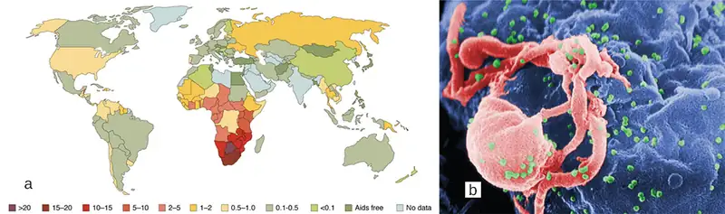
Chapter Outline: Chapter Objectives
After studying this chapter, you will be able to:
- Identify the components and anatomy of the lymphatic system
- Discuss the role of the innate immune response against pathogens
- Describe the power of the adaptive immune response to cure disease
- Explain immunological deficiencies and over-reactions of the immune system
- Discuss the role of the immune response in transplantation and cancer
- Describe the interaction of the immune and lymphatic systems with other body systems
In June 1981, the Centers for Disease Control and Prevention (CDC), in Atlanta, Georgia, published a report of an unusual cluster of five patients in Los Angeles, California. All five were diagnosed with a rare pneumonia caused by a fungus called Pneumocystis jirovecii (formerly known as Pneumocystis carinii).
Why was this unusual? Although commonly found in the lungs of healthy individuals, this fungus is an opportunistic pathogen that causes disease in individuals with suppressed or underdeveloped immune systems. The very young, whose immune systems have yet to mature, and the elderly, whose immune systems have declined with age, are particularly susceptible. The five patients from LA, though, were between 29 and 36 years of age and should have been in the prime of their lives, immunologically speaking. What could be going on?
A few days later, a cluster of eight cases was reported in New York City, also involving young patients, this time exhibiting a rare form of skin cancer known as Kaposi’s sarcoma. This cancer of the cells that line the blood and lymphatic vessels was previously observed as a relatively innocuous disease of the elderly. The disease that doctors saw in 1981 was frighteningly more severe, with multiple, fast-growing lesions that spread to all parts of the body, including the trunk and face. Could the immune systems of these young patients have been compromised in some way? Indeed, when they were tested, they exhibited extremely low numbers of a specific type of white blood cell in their bloodstreams, indicating that they had somehow lost a major part of the immune system.
Acquired immune deficiency syndrome, or AIDS, turned out to be a new disease caused by the previously unknown human immunodeficiency virus (HIV). Although nearly 100 percent fatal in those with active HIV infections in the early years, the development of anti-HIV drugs has transformed HIV infection into a chronic, manageable disease and not the certain death sentence it once was. One positive outcome resulting from the emergence of HIV disease was that the public’s attention became focused as never before on the importance of having a functional and healthy immune system.
21.1 Anatomy of the Lymphatic and Immune Systems¶
Learning Objectives
By the end of this section, you will be able to:
- Describe the structure and function of the lymphatic tissue (lymph fluid, vessels, ducts, and organs)
- Describe the structure and function of the primary and secondary lymphatic organs
- Discuss the cells of the immune system, how they function, and their relationship with the lymphatic system
The immune system is the complex collection of cells and organs that destroys or neutralizes pathogens that would otherwise cause disease or death. The lymphatic system, for most people, is associated with the immune system to such a degree that the two systems are virtually indistinguishable. The lymphatic system is the system of vessels, cells, and organs that carries excess fluids to the bloodstream and filters pathogens from the blood. The swelling of lymph nodes during an infection and the transport of lymphocytes via the lymphatic vessels are but two examples of the many connections between these critical organ systems.
Functions of the Lymphatic System¶
A major function of the lymphatic system is to drain body fluids and return them to the bloodstream. Blood pressure causes leakage of fluid from the capillaries, resulting in the accumulation of fluid in the interstitial space—that is, spaces between individual cells in the tissues. In humans, 20 liters of plasma is released into the interstitial space of the tissues each day due to capillary filtration. Once this filtrate is out of the bloodstream and in the tissue spaces, it is referred to as interstitial fluid. Of this, 17 liters is reabsorbed directly by the blood vessels. But what happens to the remaining three liters? This is where the lymphatic system comes into play. It drains the excess fluid and empties it back into the bloodstream via a series of vessels, trunks, and ducts. Lymph is the term used to describe interstitial fluid once it has entered the lymphatic system. When the lymphatic system is damaged in some way, such as by being blocked by cancer cells or destroyed by injury, protein-rich interstitial fluid accumulates (sometimes “backs up” from the lymph vessels) in the tissue spaces. This inappropriate accumulation of fluid referred to as lymphedema may lead to serious medical consequences.
As the vertebrate immune system evolved, the network of lymphatic vessels became convenient avenues for transporting the cells of the immune system. Additionally, the transport of dietary lipids and fat-soluble vitamins absorbed in the gut uses this system.
Cells of the immune system not only use lymphatic vessels to make their way from interstitial spaces back into the circulation, but they also use lymph nodes as major staging areas for the development of critical immune responses. A lymph node is one of the small, bean-shaped organs located throughout the lymphatic system.
Interactive
Visit this website for an overview of the lymphatic system. What are the three main components of the lymphatic system?
Structure of the Lymphatic System¶
The lymphatic vessels begin as a blind ending, or closed at one end, capillaries, which feed into larger and larger lymphatic vessels, and eventually empty into the bloodstream by a series of ducts. Along the way, the lymph travels through the lymph nodes, which are commonly found near the groin, armpits, neck, chest, and abdomen. Humans have about 500–600 lymph nodes throughout the body (Figure 21.2).
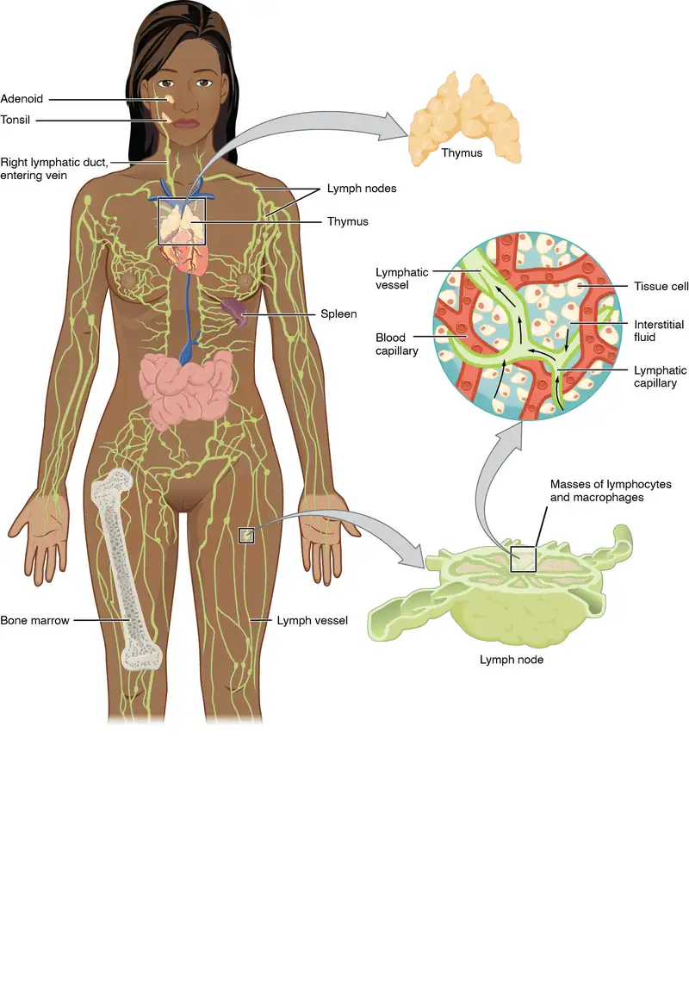
A major distinction between the lymphatic and cardiovascular systems in humans is that lymph is not actively pumped by the heart, but is forced through the vessels by the movements of the body, the contraction of skeletal muscles during body movements, and breathing. One-way valves (semi-lunar valves) in lymphatic vessels keep the lymph moving toward the heart. Lymph flows from the lymphatic capillaries, through lymphatic vessels, and then is dumped into the circulatory system via the lymphatic ducts located at the junction of the jugular and subclavian veins in the neck.
Lymphatic Capillaries¶
Lymphatic capillaries, also called the terminal lymphatics, are vessels where interstitial fluid enters the lymphatic system to become lymph fluid. Located in almost every tissue in the body, these vessels are interlaced among the arterioles and venules of the circulatory system in the soft connective tissues of the body (Figure 21.3). Exceptions are the central nervous system, bone marrow, bones, teeth, and the cornea of the eye, which do not contain lymph vessels.
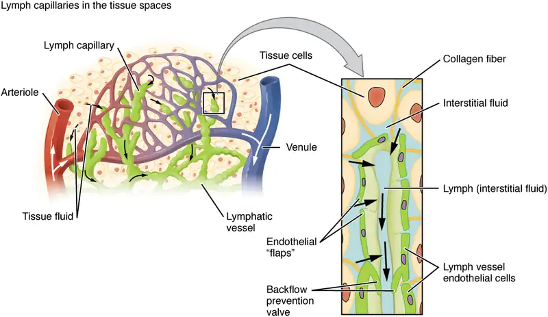
Lymphatic capillaries are formed by a one cell-thick layer of endothelial cells and represent the open end of the system, allowing interstitial fluid to flow into them via overlapping cells (see Figure 21.3). When interstitial pressure is low, the endothelial flaps close to prevent “backflow.” As interstitial pressure increases, the spaces between the cells open up, allowing the fluid to enter. Entry of fluid into lymphatic capillaries is also enabled by the collagen filaments that anchor the capillaries to surrounding structures. As interstitial pressure increases, the filaments pull on the endothelial cell flaps, opening up them even further to allow easy entry of fluid.
In the small intestine, lymphatic capillaries called lacteals are critical for the transport of dietary lipids and lipid-soluble vitamins to the bloodstream. In the small intestine, dietary triglycerides combine with other lipids and proteins, and enter the lacteals to form a milky fluid called chyle. The chyle then travels through the lymphatic system, eventually entering the bloodstream.
Larger Lymphatic Vessels, Trunks, and Ducts¶
The lymphatic capillaries empty into larger lymphatic vessels, which are similar to veins in terms of their three-tunic structure and the presence of valves. These one-way valves are located fairly close to one another, and each one causes a bulge in the lymphatic vessel, giving the vessels a beaded appearance (see Figure 21.3).
The superficial and deep lymphatics eventually merge to form larger lymphatic vessels known as lymphatic trunks. On the right side of the body, the right sides of the head, thorax, and right upper limb drain lymph fluid into the right subclavian vein via the right lymphatic duct (Figure 21.4). On the left side of the body, the remaining portions of the body drain into the larger thoracic duct, which drains into the left subclavian vein. The thoracic duct itself begins just beneath the diaphragm in the cisterna chyli, a sac-like chamber that receives lymph from the lower abdomen, pelvis, and lower limbs by way of the left and right lumbar trunks and the intestinal trunk.
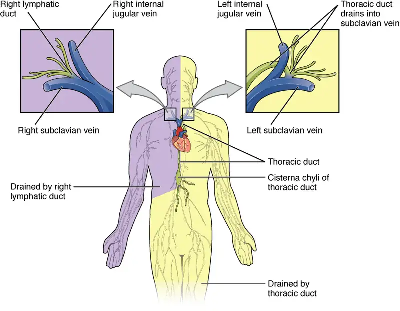
The overall drainage system of the body is asymmetrical (see Figure 21.4). The right lymphatic duct receives lymph from only the upper right side of the body. The lymph from the rest of the body enters the bloodstream through the thoracic duct via all the remaining lymphatic trunks. In general, lymphatic vessels of the subcutaneous tissues of the skin, that is, the superficial lymphatics, follow the same routes as veins, whereas the deep lymphatic vessels of the viscera generally follow the paths of arteries.
The Organization of Immune Function¶
The immune system is a collection of barriers, cells, and soluble proteins that interact and communicate with each other in extraordinarily complex ways. The modern model of immune function is organized into three phases based on the timing of their effects. The three temporal phases consist of the following:
- Barrier defenses such as the skin and mucous membranes, which act instantaneously to prevent pathogenic invasion into the body tissues
- The rapid but nonspecific innate immune response, which consists of a variety of specialized cells and soluble factors
- The slower but more specific and effective adaptive immune response, which involves many cell types and soluble factors, but is primarily controlled by white blood cells (leukocytes) known as lymphocytes, which help control immune responses
The cells of the blood, including all those involved in the immune response, arise in the bone marrow via various differentiation pathways from hematopoietic stem cells (Figure 21.5). In contrast with embryonic stem cells, hematopoietic stem cells are present throughout adulthood and allow for the continuous differentiation of blood cells to replace those lost to age or function. These cells can be divided into three classes based on function:
- Phagocytic cells, which ingest pathogens to destroy them
- Lymphocytes, which specifically coordinate the activities of adaptive immunity
- Cells containing cytoplasmic granules, which help mediate immune responses against parasites and intracellular pathogens such as viruses
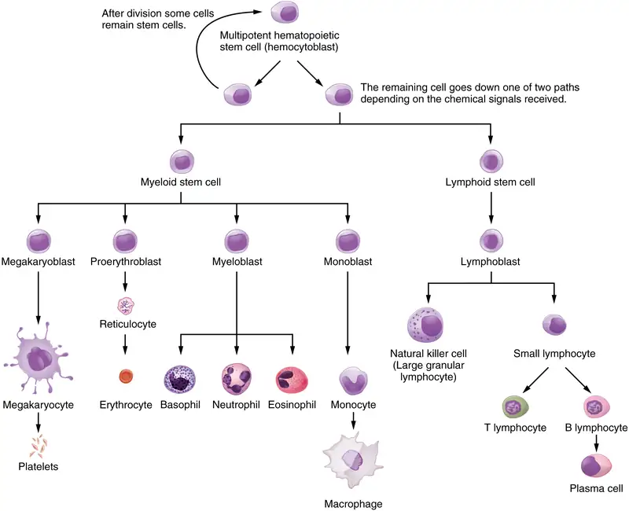
Lymphocytes: B Cells, T Cells, Plasma Cells, and Natural Killer Cells¶
As stated above, lymphocytes are the primary cells of adaptive immune responses (Table 21.1). The two basic types of lymphocytes, B cells and T cells, are identical morphologically with a large central nucleus surrounded by a thin layer of cytoplasm. They are distinguished from each other by their surface protein markers as well as by the molecules they secrete. While B cells mature in red bone marrow and T cells mature in the thymus, they both initially develop from bone marrow. T cells migrate from bone marrow to the thymus gland where they further mature. B cells and T cells are found in many parts of the body, circulating in the bloodstream and lymph, and residing in secondary lymphoid organs, including the spleen and lymph nodes, which will be described later in this section. The human body contains approximately 1012 lymphocytes.
B Cells¶
B cells are immune cells that function primarily by producing antibodies. An antibody is any of the group of proteins that binds specifically to pathogen-associated molecules known as antigens. An antigen is a chemical structure on the surface of a pathogen that binds to T or B lymphocyte antigen receptors. Once activated by binding to antigen, B cells differentiate into cells that secrete a soluble form of their surface antibodies. These activated B cells are known as plasma cells.
T Cells¶
The T cell, on the other hand, does not secrete antibody but performs a variety of functions in the adaptive immune response. Different T cell types have the ability to either secrete soluble factors that communicate with other cells of the adaptive immune response or destroy cells infected with intracellular pathogens. The roles of T and B lymphocytes in the adaptive immune response will be discussed further in this chapter.
Plasma Cells¶
Another type of lymphocyte of importance is the plasma cell. A plasma cell is a B cell that has differentiated in response to antigen binding, and has thereby gained the ability to secrete soluble antibodies. These cells differ in morphology from standard B and T cells in that they contain a large amount of cytoplasm packed with the protein-synthesizing machinery known as rough endoplasmic reticulum.
Natural Killer Cells¶
A fourth important lymphocyte is the natural killer cell, a participant in the innate immune response. A natural killer cell (NK) is a circulating blood cell that contains cytotoxic (cell-killing) granules in its extensive cytoplasm. It shares this mechanism with the cytotoxic T cells of the adaptive immune response. NK cells are among the body’s first lines of defense against viruses and certain types of cancer.
Table 21.1
| Lymphocytes | |
|---|---|
| Type of lymphocyte | Primary function |
| B lymphocyte | Generates diverse antibodies |
| T lymphocyte | Secretes chemical messengers |
| Plasma cell | Secretes antibodies |
| NK cell | Destroys virally infected cells |
Interactive
Visit this website to learn about the many different cell types in the immune system and their very specialized jobs. What is the role of the dendritic cell in an HIV infection?
Primary Lymphoid Organs and Lymphocyte Development¶
Understanding the differentiation and development of B and T cells is critical to the understanding of the adaptive immune response. It is through this process that the body (ideally) learns to destroy only pathogens and leaves the body’s own cells relatively intact. The primary lymphoid organs are the bone marrow and thymus gland. The lymphoid organs are where lymphocytes mature, proliferate, and are selected, which enables them to attack pathogens without harming the cells of the body.
Bone Marrow¶
In the embryo, blood cells are made in the yolk sac. As development proceeds, this function is taken over by the spleen, lymph nodes, and liver. Later, the bone marrow takes over most hematopoietic functions, although the final stages of the differentiation of some cells may take place in other organs. The red bone marrow is a loose collection of cells where hematopoiesis occurs, and the yellow bone marrow is a site of energy storage, which consists largely of fat cells (Figure 21.6). The B cell undergoes nearly all of its development in the red bone marrow, whereas the immature T cell, called a thymocyte, leaves the bone marrow and matures largely in the thymus gland.
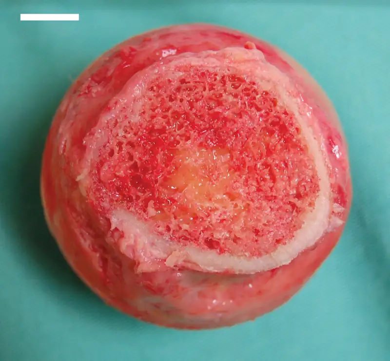
Thymus¶
The thymus gland is a bilobed organ found in the space between the sternum and the aorta of the heart (Figure 21.7). Connective tissue holds the lobes closely together but also separates them and forms a capsule.
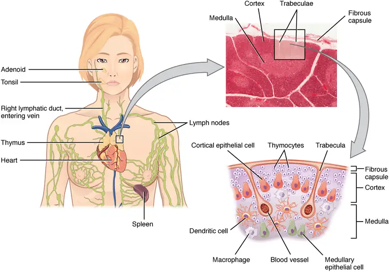
Interactive
View the University of Michigan WebScope to explore the tissue sample in greater detail.
The connective tissue capsule further divides the thymus into lobules via extensions called trabeculae. The outer region of the organ is known as the cortex and contains large numbers of thymocytes with some epithelial cells, macrophages, and dendritic cells (two types of phagocytic cells that are derived from monocytes). The cortex is densely packed so it stains more intensely than the rest of the thymus (see Figure 21.7). The medulla, where thymocytes migrate before leaving the thymus, contains a less dense collection of thymocytes, epithelial cells, and dendritic cells.
Aging and the Immune System
By the year 2050, 25 percent of the population of the United States will be 60 years of age or older. The CDC estimates that 80 percent of those 60 years and older have one or more chronic disease associated with deficiencies of the immune systems. This loss of immune function with age is called immunosenescence. To treat this growing population, medical professionals must better understand the aging process. One major cause of age-related immune deficiencies is thymic involution, the shrinking of the thymus gland that begins after puberty, at a rate of about three percent tissue loss per year, and continues until 35–45 years of age, when the rate declines to about one percent loss per year for the rest of one’s life. At that pace, the total loss of thymic epithelial tissue and thymocytes would occur at about 120 years of age. Thus, this age is a theoretical limit to a healthy human lifespan.
Thymic involution has been observed in all vertebrate species that have a thymus gland. Animal studies have shown that transplanted thymic grafts between inbred strains of mice involuted according to the age of the donor and not of the recipient, implying the process is genetically programmed. There is evidence that the thymic microenvironment, so vital to the development of naïve T cells, loses thymic epithelial cells according to the decreasing expression of the FOXN1 gene with age.
It is also known that thymic involution can be altered by hormone levels. Sex hormones such as estrogen and testosterone enhance involution, and the hormonal changes in pregnant people cause a temporary thymic involution that reverses itself, when the size of the thymus and its hormone levels return to normal, usually after lactation ceases. What does all this tell us? Can we reverse immunosenescence, or at least slow it down? The potential is there for using thymic transplants from younger donors to keep thymic output of naïve T cells high. Gene therapies that target gene expression are also seen as future possibilities. The more we learn through immunosenescence research, the more opportunities there will be to develop therapies, even though these therapies will likely take decades to develop. The ultimate goal is for everyone to live and be healthy longer, but there may be limits to immortality imposed by our genes and hormones.
Secondary Lymphoid Organs and their Roles in Active Immune Responses¶
Lymphocytes develop and mature in the primary lymphoid organs, but they mount immune responses from the secondary lymphoid organs. A naïve lymphocyte is one that has left the primary organ and entered a secondary lymphoid organ. Naïve lymphocytes are fully functional immunologically, but have yet to encounter an antigen to respond to. In addition to circulating in the blood and lymph, lymphocytes concentrate in secondary lymphoid organs, which include the lymph nodes, spleen, and lymphoid nodules. All of these tissues have many features in common, including the following:
- The presence of lymphoid follicles, the sites of the formation of lymphocytes, with specific B cell-rich and T cell-rich areas
- An internal structure of reticular fibers with associated fixed macrophages
- Germinal centers, which are the sites of rapidly dividing and differentiating B lymphocytes
- Specialized post-capillary vessels known as high endothelial venules; the cells lining these venules are thicker and more columnar than normal endothelial cells, which allow cells from the blood to directly enter these tissues
Lymph Nodes¶
Lymph nodes function to remove debris and pathogens from the lymph, and are thus sometimes referred to as the “filters of the lymph” (Figure 21.8). Any bacteria that infect the interstitial fluid are taken up by the lymphatic capillaries and transported to a regional lymph node. Dendritic cells and macrophages within this organ internalize and kill many of the pathogens that pass through, thereby removing them from the body. The lymph node is also the site of adaptive immune responses mediated by T cells, B cells, and accessory cells of the adaptive immune system. Like the thymus, the bean-shaped lymph nodes are surrounded by a tough capsule of connective tissue and are separated into compartments by trabeculae, the extensions of the capsule. In addition to the structure provided by the capsule and trabeculae, the structural support of the lymph node is provided by a series of reticular fibers laid down by fibroblasts.
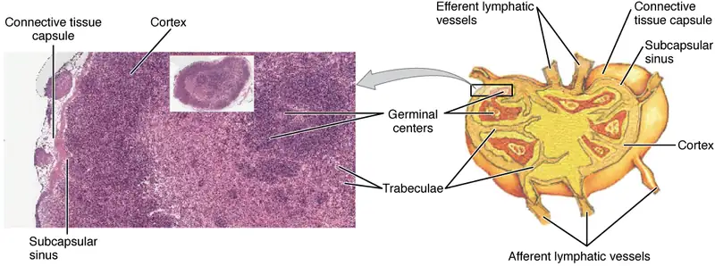
Interactive
View the University of Michigan WebScope to explore the tissue sample in greater detail.
The major routes into the lymph node are via afferent lymphatic vessels (see Figure 21.8). Cells and lymph fluid that leave the lymph node may do so by another set of vessels known as the efferent lymphatic vessels. Lymph enters the lymph node via the subcapsular sinus, which is occupied by dendritic cells, macrophages, and reticular fibers. Within the cortex of the lymph node are lymphoid follicles, which consist of germinal centers of rapidly dividing B cells surrounded by a layer of T cells and other accessory cells. As the lymph continues to flow through the node, it enters the medulla, which consists of medullary cords of B cells and plasma cells, and the medullary sinuses where the lymph collects before leaving the node via the efferent lymphatic vessels.
Spleen¶
In addition to the lymph nodes, the spleen is a major secondary lymphoid organ (Figure 21.9). It is about 12 cm (5 in) long and is attached to the lateral border of the stomach via the gastrosplenic ligament. The spleen is a fragile organ without a strong capsule, and is dark red due to its extensive vascularization. The spleen is sometimes called the “filter of the blood” because of its extensive vascularization and the presence of macrophages and dendritic cells that remove microbes and other materials from the blood, including dying red blood cells. The spleen also functions as the location of immune responses to blood-borne pathogens.
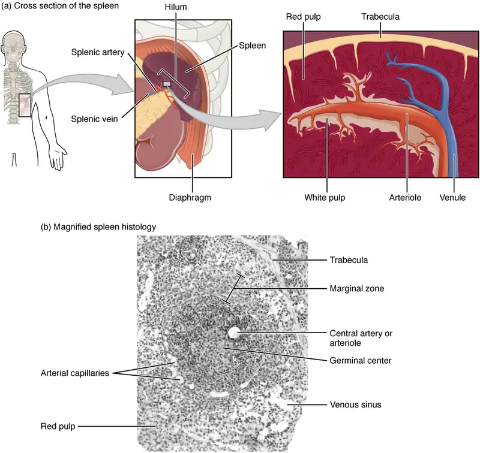
The spleen is also divided by trabeculae of connective tissue, and within each splenic nodule is an area of red pulp, consisting of mostly red blood cells, and white pulp, which resembles the lymphoid follicles of the lymph nodes. Upon entering the spleen, the splenic artery splits into several arterioles (surrounded by white pulp) and eventually into sinusoids. Blood from the capillaries subsequently collects in the venous sinuses and leaves via the splenic vein. The red pulp consists of reticular fibers with fixed macrophages attached, free macrophages, and all of the other cells typical of the blood, including some lymphocytes. The white pulp surrounds a central arteriole and consists of germinal centers of dividing B cells surrounded by T cells and accessory cells, including macrophages and dendritic cells. Thus, the red pulp primarily functions as a filtration system of the blood, using cells of the relatively nonspecific immune response, and white pulp is where adaptive T and B cell responses are mounted.
Lymphoid Nodules¶
The other lymphoid tissues, the lymphoid nodules, have a simpler architecture than the spleen and lymph nodes in that they consist of a dense cluster of lymphocytes without a surrounding fibrous capsule. These nodules are located in the respiratory and digestive tracts, areas routinely exposed to environmental pathogens.
Tonsils are lymphoid nodules located along the inner surface of the pharynx and are important in developing immunity to oral pathogens (Figure 21.10). The tonsil located at the back of the throat, the pharyngeal tonsil, is sometimes referred to as the adenoid when swollen. Such swelling is an indication of an active immune response to infection. Histologically, tonsils do not contain a complete capsule, and the epithelial layer invaginates deeply into the interior of the tonsil to form tonsillar crypts. These structures, which accumulate all sorts of materials taken into the body through eating and breathing, actually “encourage” pathogens to penetrate deep into the tonsillar tissues where they are acted upon by numerous lymphoid follicles and eliminated. This seems to be the major function of tonsils—to help children’s bodies recognize, destroy, and develop immunity to common environmental pathogens so that they will be protected in their later lives. Tonsils are often removed in those children who have recurring throat infections, especially those involving the palatine tonsils on either side of the throat, whose swelling may interfere with their breathing and/or swallowing.
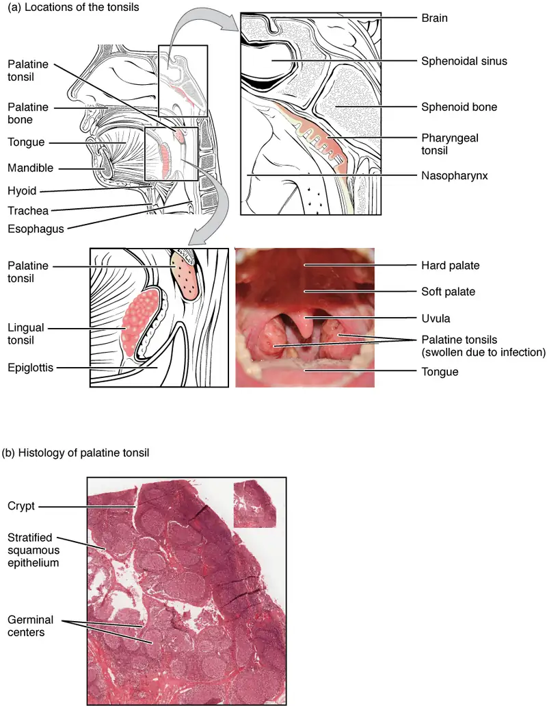
Interactive
View the University of Michigan WebScope to explore the tissue sample in greater detail.
Mucosa-associated lymphoid tissue (MALT) consists of an aggregate of lymphoid follicles directly associated with the mucous membrane epithelia. MALT makes up dome-shaped structures found underlying the mucosa of the gastrointestinal tract, breast tissue, lungs, and eyes. Peyer’s patches, a type of MALT in the small intestine, are especially important for immune responses against ingested substances (Figure 21.11). Peyer’s patches contain specialized endothelial cells called M (or microfold) cells that sample material from the intestinal lumen and transport it to nearby follicles so that adaptive immune responses to potential pathogens can be mounted. A similar process occurs involving MALT in the mucosa and submucosa of the appendix. A blockage of the lumen triggers these cells to elicit an inflammatory response that can lead to appendicitis.
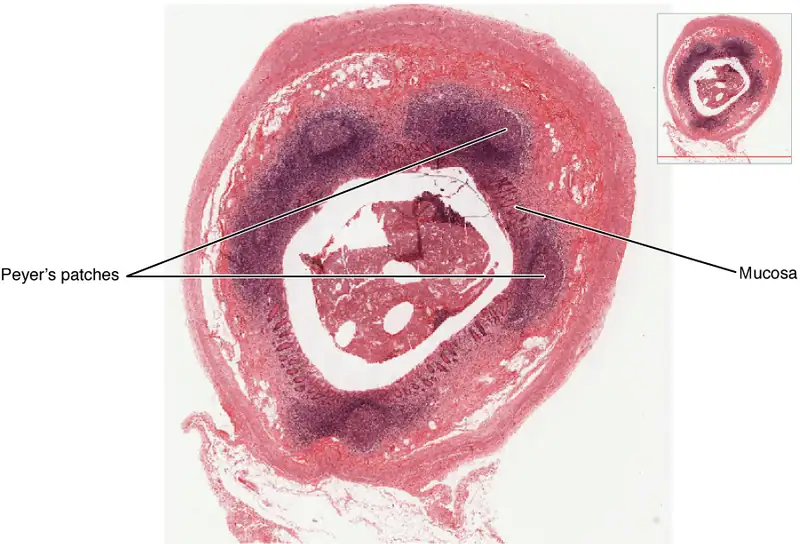
Bronchus-associated lymphoid tissue (BALT) consists of lymphoid follicular structures with an overlying epithelial layer found along the bifurcations of the bronchi, and between bronchi and arteries. They also have the typically less-organized structure of other lymphoid nodules. These tissues, in addition to the tonsils, are effective against inhaled pathogens.
21.2 Barrier Defenses and the Innate Immune Response¶
Learning Objectives
By the end of this section, you will be able to:
- Describe the barrier defenses of the body
- Show how the innate immune response is important and how it helps guide and prepare the body for adaptive immune responses
- Describe various soluble factors that are part of the innate immune response
- Explain the steps of inflammation and how they lead to destruction of a pathogen
- Discuss early induced immune responses and their level of effectiveness
The immune system can be divided into two overlapping mechanisms to destroy pathogens: the innate immune response, which is relatively rapid but nonspecific and thus not always effective, and the adaptive immune response, which is slower in its development during an initial infection with a pathogen, but is highly specific and effective at attacking a wide variety of pathogens (Figure 21.12).
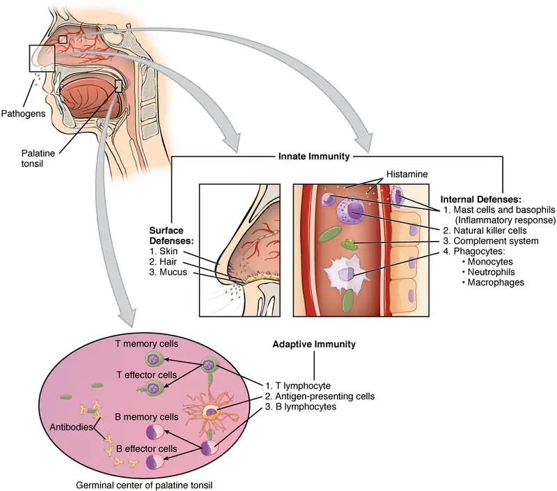
Any discussion of the innate immune response usually begins with the physical barriers that prevent pathogens from entering the body, destroy them after they enter, or flush them out before they can establish themselves in the hospitable environment of the body’s soft tissues. Barrier defenses are part of the body’s most basic defense mechanisms. The barrier defenses are not a response to infections, but they are continuously working to protect against a broad range of pathogens.
The different modes of barrier defenses are associated with the external surfaces of the body, where pathogens may try to enter (Table 21.2). The primary barrier to the entrance of microorganisms into the body is the skin. Not only is the skin covered with a layer of dead, keratinized epithelium that is too dry for bacteria in which to grow, but as these cells are continuously sloughed off from the skin, they carry bacteria and other pathogens with them. Additionally, sweat and other skin secretions may lower pH, contain toxic lipids, and physically wash microbes away.
Table 21.2
| Barrier Defenses | ||
|---|---|---|
| Site | Specific defense | Protective aspect |
| Skin | Epidermal surface | Keratinized cells of surface, Langerhans cells |
| Skin (sweat/secretions) | Sweat glands, sebaceous glands | Low pH, washing action |
| Oral cavity | Salivary glands | Lysozyme |
| Stomach | Gastrointestinal tract | Low pH |
| Mucosal surfaces | Mucosal epithelium | Nonkeratinized epithelial cells |
| Normal flora (nonpathogenic bacteria) | Mucosal tissues | Prevent pathogens from growing on mucosal surfaces |
Another barrier is the saliva in the mouth, which is rich in lysozyme—an enzyme that destroys bacteria by digesting their cell walls. The acidic environment of the stomach, which is fatal to many pathogens, is also a barrier. Additionally, the mucus layer of the gastrointestinal tract, respiratory tract, reproductive tract, eyes, ears, and nose traps both microbes and debris, and facilitates their removal. In the case of the upper respiratory tract, ciliated epithelial cells move potentially contaminated mucus upwards to the mouth, where it is then swallowed into the digestive tract, ending up in the harsh acidic environment of the stomach. Considering how often you breathe compared to how often you eat or perform other activities that expose you to pathogens, it is not surprising that multiple barrier mechanisms have evolved to work in concert to protect this vital area.
Cells of the Innate Immune Response¶
A phagocyte is a cell that is able to surround and engulf a particle or cell, a process called phagocytosis. The phagocytes of the immune system engulf other particles or cells, either to clean an area of debris, old cells, or to kill pathogenic organisms such as bacteria. The phagocytes are the body’s fast acting, first line of immunological defense against organisms that have breached barrier defenses and have entered the vulnerable tissues of the body.
Phagocytes: Macrophages and Neutrophils¶
Many of the cells of the immune system have a phagocytic ability, at least at some point during their life cycles. Phagocytosis is an important and effective mechanism of destroying pathogens during innate immune responses. The phagocyte takes the organism inside itself as a phagosome, which subsequently fuses with a lysosome and its digestive enzymes, effectively killing many pathogens. On the other hand, some bacteria including Mycobacteria tuberculosis, the cause of tuberculosis, may be resistant to these enzymes and are therefore much more difficult to clear from the body. Macrophages, neutrophils, and dendritic cells are the major phagocytes of the immune system.
A macrophage is an irregularly shaped phagocyte that is amoeboid in nature and is the most versatile of the phagocytes in the body. Macrophages move through tissues and squeeze through capillary walls using pseudopodia. They not only participate in innate immune responses but have also evolved to cooperate with lymphocytes as part of the adaptive immune response. Macrophages exist in many tissues of the body, either freely roaming through connective tissues or fixed to reticular fibers within specific tissues such as lymph nodes. When pathogens breach the body’s barrier defenses, macrophages are the first line of defense (Table 21.3). They are called different names, depending on the tissue: Kupffer cells in the liver, histiocytes in connective tissue, and alveolar macrophages in the lungs.
A neutrophil is a phagocytic cell that is attracted via chemotaxis from the bloodstream to infected tissues. These spherical cells are granulocytes. A granulocyte contains cytoplasmic granules, which in turn contain a variety of vasoactive mediators such as histamine. In contrast, macrophages are agranulocytes. An agranulocyte has few or no cytoplasmic granules. Whereas macrophages act like sentries, always on guard against infection, neutrophils can be thought of as military reinforcements that are called into a battle to hasten the destruction of the enemy. Although, usually thought of as the primary pathogen-killing cell of the inflammatory process of the innate immune response, new research has suggested that neutrophils play a role in the adaptive immune response as well, just as macrophages do.
A monocyte is a circulating precursor cell that differentiates into either a macrophage or dendritic cell, which can be rapidly attracted to areas of infection by signal molecules of inflammation.
Table 21.3
| Phagocytic Cells of the Innate Immune System | |||
|---|---|---|---|
| Cell | Cell type | Primary location | Function in the innate immune response |
| Macrophage | Agranulocyte | Body cavities/organs | Phagocytosis |
| Neutrophil | Granulocyte | Blood | Phagocytosis |
| Monocyte | Agranulocyte | Blood | Precursor of macrophage/dendritic cell |
Natural Killer Cells¶
NK cells are a type of lymphocyte that have the ability to induce apoptosis, that is, programmed cell death, in cells infected with intracellular pathogens such as obligate intracellular bacteria and viruses. NK cells recognize these cells by mechanisms that are still not well understood, but that presumably involve their surface receptors. NK cells can induce apoptosis, in which a cascade of events inside the cell causes its own death by either of two mechanisms:
1) NK cells are able to respond to chemical signals and express the fas ligand. The fas ligand is a surface molecule that binds to the fas molecule on the surface of the infected cell, sending it apoptotic signals, thus killing the cell and the pathogen within it; or
2) The granules of the NK cells release perforins and granzymes. A perforin is a protein that forms pores in the membranes of infected cells. A granzyme is a protein-digesting enzyme that enters the cell via the perforin pores and triggers apoptosis intracellularly.
Both mechanisms are especially effective against virally infected cells. If apoptosis is induced before the virus has the ability to synthesize and assemble all its components, no infectious virus will be released from the cell, thus preventing further infection.
Recognition of Pathogens¶
Cells of the innate immune response, the phagocytic cells, and the cytotoxic NK cells recognize patterns of pathogen-specific molecules, such as bacterial cell wall components or bacterial flagellar proteins, using pattern recognition receptors. A pattern recognition receptor (PRR) is a membrane-bound receptor that recognizes characteristic features of a pathogen and molecules released by stressed or damaged cells.
These receptors, which are thought to have evolved prior to the adaptive immune response, are present on the cell surface whether they are needed or not. Their variety, however, is limited by two factors. First, the fact that each receptor type must be encoded by a specific gene requires the cell to allocate most or all of its DNA to make receptors able to recognize all pathogens. Secondly, the variety of receptors is limited by the finite surface area of the cell membrane. Thus, the innate immune system must “get by” using only a limited number of receptors that are active against as wide a variety of pathogens as possible. This strategy is in stark contrast to the approach used by the adaptive immune system, which uses large numbers of different receptors, each highly specific to a particular pathogen.
Should the cells of the innate immune system come into contact with a species of pathogen they recognize, the cell will bind to the pathogen and initiate phagocytosis (or cellular apoptosis in the case of an intracellular pathogen) in an effort to destroy the offending microbe. Receptors vary somewhat according to cell type, but they usually include receptors for bacterial components and for complement, discussed below.
Soluble Mediators of the Innate Immune Response¶
The previous discussions have alluded to chemical signals that can induce cells to change various physiological characteristics, such as the expression of a particular receptor. These soluble factors are secreted during innate or early induced responses, and later during adaptive immune responses.
Cytokines and Chemokines¶
A cytokine is signaling molecule that allows cells to communicate with each other over short distances. Cytokines are secreted into the intercellular space, and the action of the cytokine induces the receiving cell to change its physiology. A chemokine is a soluble chemical mediator similar to cytokines except that its function is to attract cells (chemotaxis) from longer distances.
Interactive
Visit this website to learn about phagocyte chemotaxis. Phagocyte chemotaxis is the movement of phagocytes according to the secretion of chemical messengers in the form of interleukins and other chemokines. By what means does a phagocyte destroy a bacterium that it has ingested?
Early induced Proteins¶
Early induced proteins are those that are not constitutively present in the body, but are made as they are needed early during the innate immune response. Interferons are an example of early induced proteins. Cells infected with viruses secrete interferons that travel to adjacent cells and induce them to make antiviral proteins. Thus, even though the initial cell is sacrificed, the surrounding cells are protected. Other early induced proteins specific for bacterial cell wall components are mannose-binding protein and C-reactive protein, made in the liver, which bind specifically to polysaccharide components of the bacterial cell wall. Phagocytes such as macrophages have receptors for these proteins, and they are thus able to recognize them as they are bound to the bacteria. This brings the phagocyte and bacterium into close proximity and enhances the phagocytosis of the bacterium by the process known as opsonization. Opsonization is the tagging of a pathogen for phagocytosis by the binding of an antibody or an antimicrobial protein.
Complement System¶
The complement system is a series of proteins constitutively found in the blood plasma. As such, these proteins are not considered part of the early induced immune response, even though they share features with some of the antibacterial proteins of this class. Made in the liver, they have a variety of functions in the innate immune response, using what is known as the “alternate pathway” of complement activation. Additionally, complement functions in the adaptive immune response as well, in what is called the classical pathway. The complement system consists of several proteins that enzymatically alter and fragment later proteins in a series, which is why it is termed cascade. Once activated, the series of reactions is irreversible, and releases fragments that have the following actions:
- Bind to the cell membrane of the pathogen that activates it, labeling it for phagocytosis (opsonization)
- Diffuse away from the pathogen and act as chemotactic agents to attract phagocytic cells to the site of inflammation
- Form damaging pores in the plasma membrane of the pathogen
Figure 21.13 shows the classical pathway, which requires antibodies of the adaptive immune response. The alternate pathway does not require an antibody to become activated.
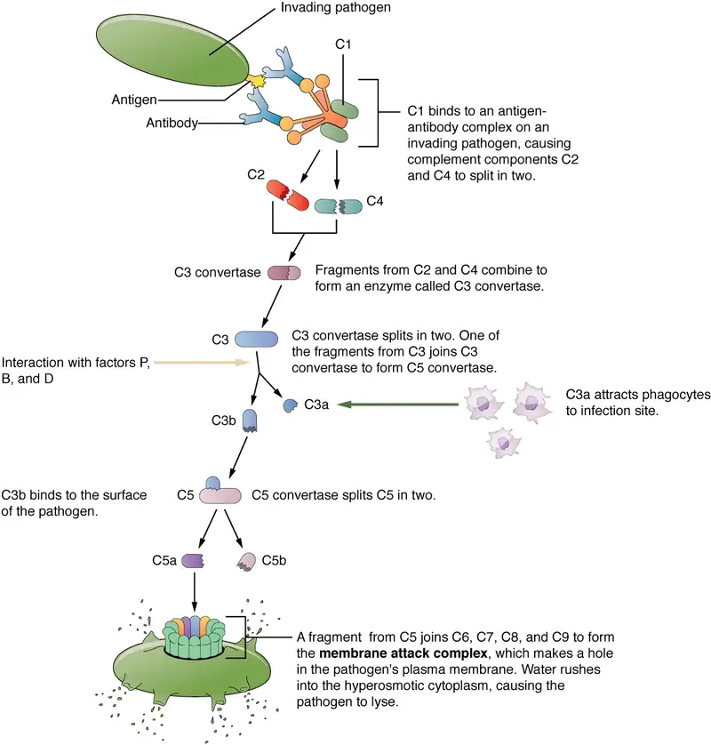
The splitting of the C3 protein is the common step to both pathways. In the alternate pathway, C3 is activated spontaneously and, after reacting with the molecules factor P, factor B, and factor D, splits apart. The larger fragment, C3b, binds to the surface of the pathogen and C3a, the smaller fragment, diffuses outward from the site of activation and attracts phagocytes to the site of infection. Surface-bound C3b then activates the rest of the cascade, with the last five proteins, C5–C9, forming the membrane-attack complex (MAC). The MAC can kill certain pathogens by disrupting their osmotic balance. The MAC is especially effective against a broad range of bacteria. The classical pathway is similar, except the early stages of activation require the presence of antibody bound to antigen, and thus is dependent on the adaptive immune response. The earlier fragments of the cascade also have important functions. Phagocytic cells such as macrophages and neutrophils are attracted to an infection site by chemotactic attraction to smaller complement fragments. Additionally, once they arrive, their receptors for surface-bound C3b opsonize the pathogen for phagocytosis and destruction.
Inflammatory Response¶
The hallmark of the innate immune response is inflammation. Inflammation is something everyone has experienced. Stub a toe, cut a finger, or do any activity that causes tissue damage and inflammation will result, with its four characteristics: heat, redness, pain, and swelling (“loss of function” is sometimes mentioned as a fifth characteristic). It is important to note that inflammation does not have to be initiated by an infection, but can also be caused by tissue injuries. The release of damaged cellular contents into the site of injury is enough to stimulate the response, even in the absence of breaks in physical barriers that would allow pathogens to enter (by hitting your thumb with a hammer, for example). The inflammatory reaction brings in phagocytic cells to the damaged area to clear cellular debris and to set the stage for wound repair (Figure 21.14).
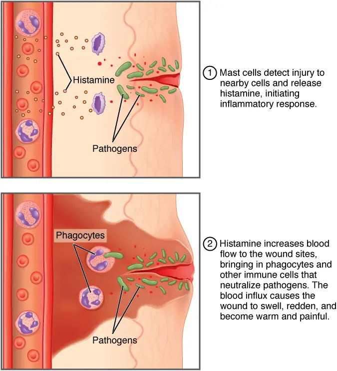
This reaction also brings in the cells of the innate immune system, allowing them to get rid of the sources of a possible infection. Inflammation is part of a very basic form of immune response. The process not only brings fluid and cells into the site to destroy the pathogen and remove it and debris from the site, but also helps to isolate the site, limiting the spread of the pathogen. Acute inflammation is a short-term inflammatory response to an insult to the body. If the cause of the inflammation is not resolved, however, it can lead to chronic inflammation, which is associated with major tissue destruction and fibrosis. Chronic inflammation is ongoing inflammation. It can be caused by foreign bodies, persistent pathogens, and autoimmune diseases such as rheumatoid arthritis.
There are four important parts to the inflammatory response:
- Tissue Injury. The released contents of injured cells stimulate the release of mast cell granules and their potent inflammatory mediators such as histamine, leukotrienes, and prostaglandins. Histamine increases the diameter of local blood vessels (vasodilation), causing an increase in blood flow. Histamine also increases the permeability of local capillaries, causing plasma to leak out and form interstitial fluid. This causes the swelling associated with inflammation.
Additionally, injured cells, phagocytes, and basophils are sources of inflammatory mediators, including prostaglandins and leukotrienes. Leukotrienes attract neutrophils from the blood by chemotaxis and increase vascular permeability. Prostaglandins cause vasodilation by relaxing vascular smooth muscle and are a major cause of the pain associated with inflammation. Nonsteroidal anti-inflammatory drugs such as aspirin and ibuprofen relieve pain by inhibiting prostaglandin production. - Vasodilation. Many inflammatory mediators such as histamine are vasodilators that increase the diameters of local capillaries. This causes increased blood flow and is responsible for the heat and redness of inflamed tissue. It allows greater access of the blood to the site of inflammation.
- Increased Vascular Permeability. At the same time, inflammatory mediators increase the permeability of the local vasculature, causing leakage of fluid into the interstitial space, resulting in the swelling, or edema, associated with inflammation.
- Recruitment of Phagocytes. Leukotrienes are particularly good at attracting neutrophils from the blood to the site of infection by chemotaxis. Following an early neutrophil infiltrate stimulated by macrophage cytokines, more macrophages are recruited to clean up the debris left over at the site. When local infections are severe, neutrophils are attracted to the sites of infections in large numbers, and as they phagocytose the pathogens and subsequently die, their accumulated cellular remains are visible as pus at the infection site.
Overall, inflammation is valuable for many reasons. Not only are the pathogens killed and debris removed, but the increase in vascular permeability encourages the entry of clotting factors, the first step towards wound repair. Inflammation also facilitates the transport of antigen to lymph nodes by dendritic cells for the development of the adaptive immune response.
21.3 The Adaptive Immune Response: T lymphocytes and Their Functional Types¶
Learning Objectives
By the end of this section, you will be able to:
- Explain the advantages of the adaptive immune response over the innate immune response
- List the various characteristics of an antigen
- Describe the types of T cell antigen receptors
- Outline the steps of T cell development
- Describe the major T cell types and their functions
Innate immune responses (and early induced responses) are in many cases ineffective at completely controlling pathogen growth. However, they slow pathogen growth and allow time for the adaptive immune response to strengthen and either control or eliminate the pathogen. The innate immune system also sends signals to the cells of the adaptive immune system, guiding them in how to attack the pathogen. Thus, these are the two important arms of the immune response.
The Benefits of the Adaptive Immune Response¶
The specificity of the adaptive immune response—its ability to specifically recognize and make a response against a wide variety of pathogens—is its great strength. Antigens, the small chemical groups often associated with pathogens, are recognized by receptors on the surface of B and T lymphocytes. The adaptive immune response to these antigens is so versatile that it can respond to nearly any pathogen. This increase in specificity comes because the adaptive immune response has a unique way to develop as many as 1012, or 100 trillion, different receptors to recognize nearly every conceivable pathogen. How could so many different types of antibodies be encoded? And what about the many specificities of T cells? There is not nearly enough DNA in a cell to have a separate gene for each specificity. The mechanism was finally worked out in the 1970s and 1980s using the new tools of molecular genetics.
Primary Disease and Immunological Memory¶
The immune system’s first exposure to a pathogen is called a primary adaptive response. Symptoms of a first infection, called primary disease, are always relatively severe because it takes time for an initial adaptive immune response to a pathogen to become effective.
Upon re-exposure to the same pathogen, a secondary adaptive immune response is generated, which is stronger and faster than the primary response. The secondary adaptive response often eliminates a pathogen before it can cause significant tissue damage or any symptoms. Without symptoms, there is no disease, and the individual is not even aware of the infection. This secondary response is the basis of immunological memory, which protects us from getting diseases repeatedly from the same pathogen. By this mechanism, an individual’s exposure to pathogens early in life spares the person from these diseases later in life.
Self Recognition¶
A third important feature of the adaptive immune response is its ability to distinguish between self-antigens, those that are normally present in the body, and foreign antigens, those that might be on a potential pathogen. As T and B cells mature, there are mechanisms in place that prevent them from recognizing self-antigen, preventing a damaging immune response against the body. These mechanisms are not 100 percent effective, however, and their breakdown leads to autoimmune diseases, which will be discussed later in this chapter.
T Cell-Mediated Immune Responses¶
The primary cells that control the adaptive immune response are the lymphocytes, the T and B cells. T cells are particularly important, as they not only control a multitude of immune responses directly, but also control B cell immune responses in many cases as well. Thus, many of the decisions about how to attack a pathogen are made at the T cell level, and knowledge of their functional types is crucial to understanding the functioning and regulation of adaptive immune responses as a whole.
T lymphocytes recognize antigens based on a two-chain protein receptor. The most common and important of these are the alpha-beta T cell receptors (Figure 21.15).
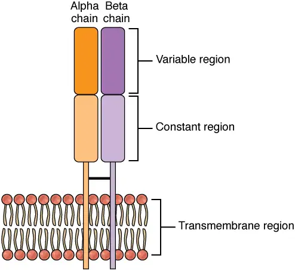
There are two chains in the T cell receptor, and each chain consists of two domains. The variable region domain is furthest away from the T cell membrane and is so named because its amino acid sequence varies between receptors. In contrast, the constant region domain has less variation. The differences in the amino acid sequences of the variable domains are the molecular basis of the diversity of antigens the receptor can recognize. Thus, the antigen-binding site of the receptor consists of the terminal ends of both receptor chains, and the amino acid sequences of those two areas combine to determine its antigenic specificity. Each T cell produces only one type of receptor and thus is specific for a single particular antigen.
Antigens¶
Antigens on pathogens are usually large and complex, and consist of many antigenic determinants. An antigenic determinant (epitope) is one of the small regions within an antigen to which a receptor can bind, and antigenic determinants are limited by the size of the receptor itself. They usually consist of six or fewer amino acid residues in a protein, or one or two sugar moieties in a carbohydrate antigen. Antigenic determinants on a carbohydrate antigen are usually less diverse than on a protein antigen. Carbohydrate antigens are found on bacterial cell walls and on red blood cells (the ABO blood group antigens). Protein antigens are complex because of the variety of three-dimensional shapes that proteins can assume, and are especially important for the immune responses to viruses and worm parasites. It is the interaction of the shape of the antigen and the complementary shape of the amino acids of the antigen-binding site that accounts for the chemical basis of specificity (Figure 21.16).
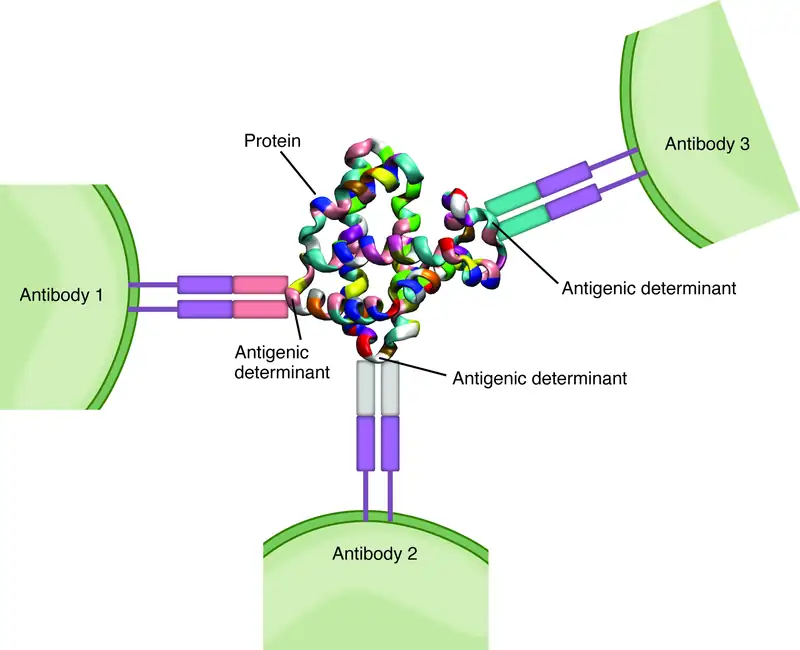
Antigen Processing and Presentation¶
Although Figure 21.16 shows T cell receptors interacting with antigenic determinants directly, the mechanism that T cells use to recognize antigens is, in reality, much more complex. T cells do not recognize free-floating or cell-bound antigens as they appear on the surface of the pathogen. They only recognize antigen on the surface of specialized cells called antigen-presenting cells. Antigens are internalized by these cells. Antigen processing is a mechanism that enzymatically cleaves the antigen into smaller pieces. The antigen fragments are then brought to the cell’s surface and associated with a specialized type of antigen-presenting protein known as a major histocompatibility complex (MHC) molecule. The MHC is the cluster of genes that encode these antigen-presenting molecules. The association of the antigen fragments with an MHC molecule on the surface of a cell is known as antigen presentation and results in the recognition of antigen by a T cell. This association of antigen and MHC occurs inside the cell, and it is the complex of the two that is brought to the surface. The peptide-binding cleft is a small indentation at the end of the MHC molecule that is furthest away from the cell membrane; it is here that the processed fragment of antigen sits. MHC molecules are capable of presenting a variety of antigens, depending on the amino acid sequence, in their peptide-binding clefts. It is the combination of the MHC molecule and the fragment of the original peptide or carbohydrate that is actually physically recognized by the T cell receptor (Figure 21.17).
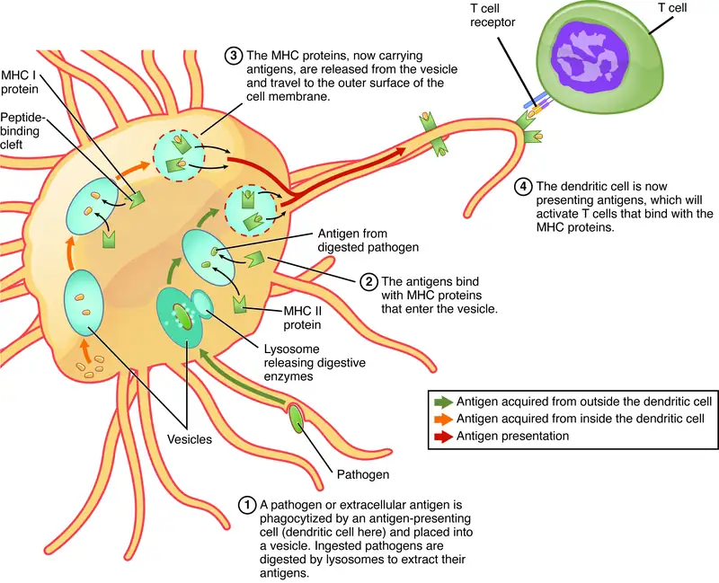
Two distinct types of MHC molecules, MHC class I and MHC class II, play roles in antigen presentation. Although produced from different genes, they both have similar functions. They bring processed antigen to the surface of the cell via a transport vesicle and present the antigen to the T cell and its receptor. Antigens from different classes of pathogens, however, use different MHC classes and take different routes through the cell to get to the surface for presentation. The basic mechanism, though, is the same. Antigens are processed by digestion, are brought into the endomembrane system of the cell, and then are expressed on the surface of the antigen-presenting cell for antigen recognition by a T cell.
Intracellular antigens are typical of viruses, which replicate inside the cell, and certain other intracellular parasites and bacteria. These antigens are processed in the cytosol by an enzyme complex known as the proteasome and are then brought into the endoplasmic reticulum by the transporter associated with antigen processing (TAP) system, where they interact with class I MHC molecules and are eventually transported to the cell surface by a transport vesicle.
Extracellular antigens, characteristic of many bacteria, parasites, and fungi that do not replicate inside the cell’s cytoplasm, are brought into the endomembrane system of the cell by receptor-mediated endocytosis. The resulting vesicle fuses with vesicles from the Golgi complex, which contain pre-formed MHC class II molecules. After fusion of these two vesicles and the association of antigen and MHC, the new vesicle makes its way to the cell surface.
Professional Antigen-presenting Cells¶
Many cell types express class I molecules for the presentation of intracellular antigens. These MHC molecules may then stimulate a cytotoxic T cell immune response, eventually destroying the cell and the pathogen within. This is especially important when it comes to the most common class of intracellular pathogens, the virus. Viruses infect nearly every tissue of the body, so all these tissues must necessarily be able to express class I MHC or no T cell response can be made.
On the other hand, class II MHC molecules are expressed only on the cells of the immune system, specifically cells that affect other arms of the immune response. Thus, these cells are called “professional” antigen-presenting cells to distinguish them from those that bear class I MHC. The three types of professional antigen presenters are macrophages, dendritic cells, and B cells (Table 21.4).
Macrophages stimulate T cells to release cytokines that enhance phagocytosis. Dendritic cells also kill pathogens by phagocytosis (see Figure 21.17), but their major function is to bring antigens to regional draining lymph nodes. The lymph nodes are the locations in which most T cell responses against pathogens of the interstitial tissues are mounted. Macrophages are found in the skin and in the lining of mucosal surfaces, such as the nasopharynx, stomach, lungs, and intestines. B cells may also present antigens to T cells, which are necessary for certain types of antibody responses, to be covered later in this chapter.
Table 21.4
| Classes of Antigen-presenting Cells | |||
|---|---|---|---|
| MHC | Cell type | Phagocytic? | Function |
| Class I | Many | No | Stimulates cytotoxic T cell immune response |
| Class II | Macrophage | Yes | Stimulates phagocytosis and presentation at primary infection site |
| Class II | Dendritic | Yes, in tissues | Brings antigens to regional lymph nodes |
| Class II | B cell | Yes, internalizes surface Ig and antigen | Stimulates antibody secretion by B cells |
T Cell Development and Differentiation¶
The process of eliminating T cells that might attack the cells of one’s own body is referred to as T cell tolerance. While thymocytes are in the cortex of the thymus, they are referred to as “double negatives,” meaning that they do not bear the CD4 or CD8 molecules that you can use to follow their pathways of differentiation (Figure 21.18). In the cortex of the thymus, they are exposed to cortical epithelial cells. In a process known as positive selection, double-negative thymocytes bind to the MHC molecules they observe on the thymic epithelia, and the MHC molecules of “self” are selected. This mechanism kills many thymocytes during T cell differentiation. In fact, only two percent of the thymocytes that enter the thymus leave it as mature, functional T cells.
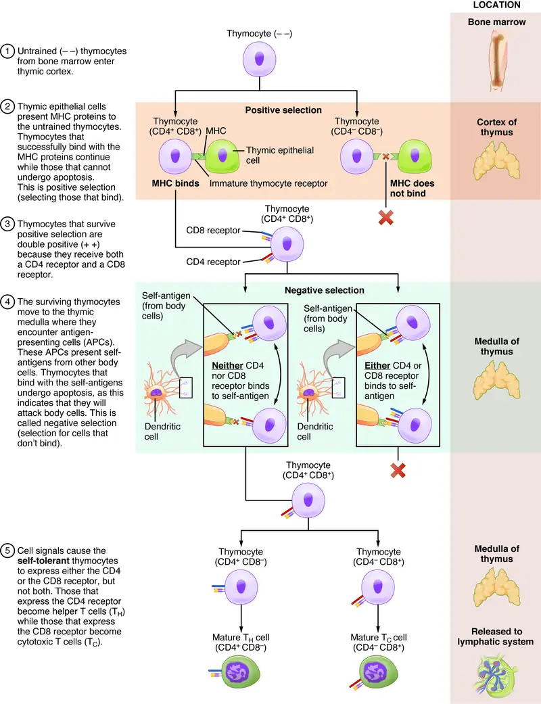
Later, the cells become double positives that express both CD4 and CD8 markers and move from the cortex to the junction between the cortex and medulla. It is here that negative selection takes place. In negative selection, self-antigens are brought into the thymus from other parts of the body by professional antigen-presenting cells. The T cells that bind to these self-antigens are selected for negatively and are killed by apoptosis. In summary, the only T cells left are those that can bind to MHC molecules of the body with foreign antigens presented on their binding clefts, preventing an attack on one’s own body tissues, at least under normal circumstances. Tolerance can be broken, however, by the development of an autoimmune response, to be discussed later in this chapter.
The cells that leave the thymus become single positives, expressing either CD4 or CD8, but not both (see Figure 21.18). The CD4+ T cells will bind to class II MHC and the CD8+ cells will bind to class I MHC. The discussion that follows explains the functions of these molecules and how they can be used to differentiate between the different T cell functional types.
Mechanisms of T Cell-mediated Immune Responses¶
Mature T cells become activated by recognizing processed foreign antigen in association with a self-MHC molecule and begin dividing rapidly by mitosis. This proliferation of T cells is called clonal expansion and is necessary to make the immune response strong enough to effectively control a pathogen. How does the body select only those T cells that are needed against a specific pathogen? Again, the specificity of a T cell is based on the amino acid sequence and the three-dimensional shape of the antigen-binding site formed by the variable regions of the two chains of the T cell receptor (Figure 21.19). Clonal selection is the process of antigen binding only to those T cells that have receptors specific to that antigen. Each T cell that is activated has a specific receptor “hard-wired” into its DNA, and all of its progeny will have identical DNA and T cell receptors, forming clones of the original T cell.
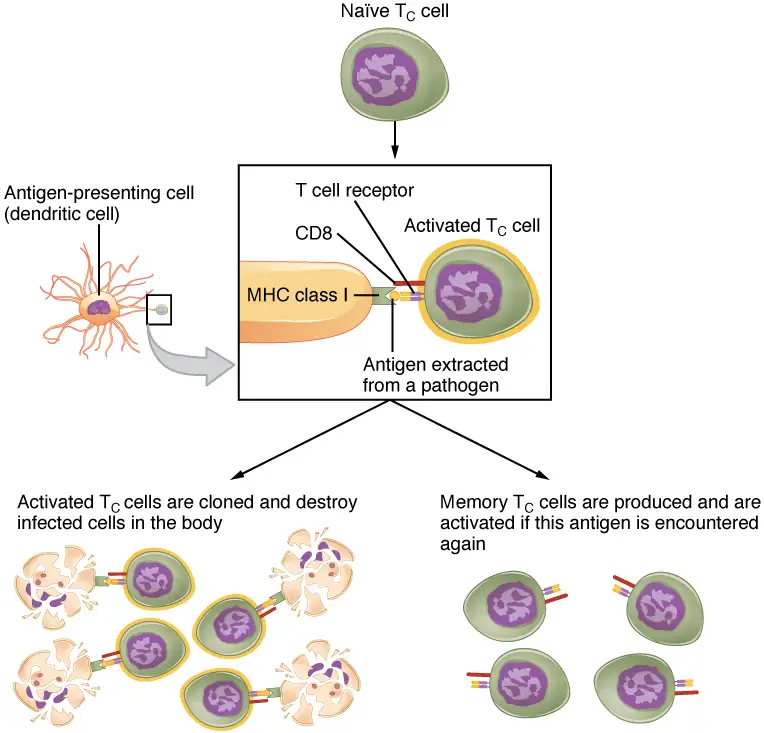
Clonal Selection and Expansion¶
The clonal selection theory was proposed by Frank Burnet in the 1950s. However, the term clonal selection is not a complete description of the theory, as clonal expansion goes hand in glove with the selection process. The main tenet of the theory is that a typical individual has a multitude (1011) of different types of T cell clones based on their receptors. In this use, a clone is a group of lymphocytes that share the same antigen receptor. Each clone is necessarily present in the body in low numbers. Otherwise, the body would not have room for lymphocytes with so many specificities.
Only those clones of lymphocytes whose receptors are activated by the antigen are stimulated to proliferate. Keep in mind that most antigens have multiple antigenic determinants, so a T cell response to a typical antigen involves a polyclonal response. A polyclonal response is the stimulation of multiple T cell clones. Once activated, the selected clones increase in number and make many copies of each cell type, each clone with its unique receptor. By the time this process is complete, the body will have large numbers of specific lymphocytes available to fight the infection (see Figure 21.19).
The Cellular Basis of Immunological Memory¶
As already discussed, one of the major features of an adaptive immune response is the development of immunological memory.
During a primary adaptive immune response, both memory T cells and effector T cells are generated. Memory T cells are long-lived and can even persist for a lifetime. Memory cells are primed to act rapidly. Thus, any subsequent exposure to the pathogen will elicit a very rapid T cell response. This rapid, secondary adaptive response generates large numbers of effector T cells so fast that the pathogen is often overwhelmed before it can cause any symptoms of disease. This is what is meant by immunity to a disease. The same pattern of primary and secondary immune responses occurs in B cells and the antibody response, as will be discussed later in the chapter.
T Cell Types and their Functions¶
In the discussion of T cell development, you saw that mature T cells express either the CD4 marker or the CD8 marker, but not both. These markers are cell adhesion molecules that keep the T cell in close contact with the antigen-presenting cell by directly binding to the MHC molecule (to a different part of the molecule than does the antigen). Thus, T cells and antigen-presenting cells are held together in two ways: by CD4 or CD8 attaching to MHC and by the T cell receptor binding to antigen (Figure 21.20).
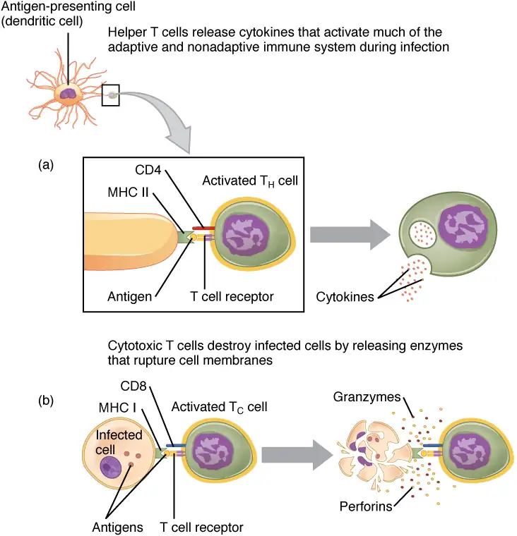
Although the correlation is not 100 percent, CD4-bearing T cells are associated with helper functions and CD8-bearing T cells are associated with cytotoxicity. These functional distinctions based on CD4 and CD8 markers are useful in defining the function of each type.
Helper T Cells and their Cytokines¶
Helper T cells (Th), bearing the CD4 molecule, function by secreting cytokines that act to enhance other immune responses. There are two classes of Th cells, and they act on different components of the immune response. These cells are not distinguished by their surface molecules but by the characteristic set of cytokines they secrete (Table 21.5).
Th1 cells are a type of helper T cell that secretes cytokines that regulate the immunological activity and development of a variety of cells, including macrophages and other types of T cells.
Th2 cells, on the other hand, are cytokine-secreting cells that act on B cells to drive their differentiation into plasma cells that make antibody. In fact, T cell help is required for antibody responses to most protein antigens, and these are called T cell-dependent antigens.
Cytotoxic T cells¶
Cytotoxic T cells (Tc) are T cells that kill target cells by inducing apoptosis using the same mechanism as NK cells. They either express Fas ligand, which binds to the fas molecule on the target cell, or act by using perforins and granzymes contained in their cytoplasmic granules. As was discussed earlier with NK cells, killing a virally infected cell before the virus can complete its replication cycle results in the production of no infectious particles. As more Tc cells are developed during an immune response, they overwhelm the ability of the virus to cause disease. In addition, each Tc cell can kill more than one target cell, making them especially effective. Tc cells are so important in the antiviral immune response that some speculate that this was the main reason the adaptive immune response evolved in the first place.
Regulatory T Cells¶
Regulatory T cells (Treg), or suppressor T cells, are the most recently discovered of the types listed here, so less is understood about them. In addition to CD4, they bear the molecules CD25 and FOXP3. Exactly how they function is still under investigation, but it is known that they suppress other T cell immune responses. This is an important feature of the immune response, because if clonal expansion during immune responses were allowed to continue uncontrolled, these responses could lead to autoimmune diseases and other medical issues.
Not only do T cells directly destroy pathogens, but they regulate nearly all other types of the adaptive immune response as well, as evidenced by the functions of the T cell types, their surface markers, the cells they work on, and the types of pathogens they work against (see Table 21.5).
Table 21.5
| Functions of T Cell Types and Their Cytokines | ||||||
|---|---|---|---|---|---|---|
| T cell | Main target | Function | Pathogen | Surface marker | MHC | Cytokines or mediators |
| Tc | Infected cells | Cytotoxicity | Intracellular | CD8 | Class I | Perforins, granzymes, and fas ligand |
| Th1 | Macrophage | Helper inducer | Extracellular | CD4 | Class II | Interferon-γ and TGF-β |
| Th2 | B cell | Helper inducer | Extracellular | CD4 | Class II | IL-4, IL-6, IL-10, and others |
| Treg | Th cell | Suppressor | None | CD4, CD25 | ? | TGF-β and IL-10 |
21.4 The Adaptive Immune Response: B-lymphocytes and Antibodies¶
Learning Objectives
By the end of this section, you will be able to:
- Explain how B cells mature and how B cell tolerance develops
- Discuss how B cells are activated and differentiate into plasma cells
- Describe the structure of the antibody classes and their functions
Antibodies were the first component of the adaptive immune response to be characterized by scientists working on the immune system. It was already known that individuals who survived a bacterial infection were immune to re-infection with the same pathogen. Early microbiologists took serum from an immune patient and mixed it with a fresh culture of the same type of bacteria, then observed the bacteria under a microscope. The bacteria became clumped in a process called agglutination. When a different bacterial species was used, the agglutination did not happen. Thus, there was something in the serum of immune individuals that could specifically bind to and agglutinate bacteria.
Scientists now know the cause of the agglutination is an antibody molecule, also called an immunoglobulin. What is an antibody? An antibody protein is essentially a secreted form of a B cell receptor. (In fact, surface immunoglobulin is another name for the B cell receptor.) Not surprisingly, the same genes encode both the secreted antibodies and the surface immunoglobulins. One minor difference in the way these proteins are synthesized distinguishes a naïve B cell with antibody on its surface from an antibody-secreting plasma cell with no antibodies on its surface. The antibodies of the plasma cell have the exact same antigen-binding site and specificity as their B cell precursors.
There are five different classes of antibody found in humans: IgM, IgD, IgG, IgA, and IgE. Each of these has specific functions in the immune response, so by learning about them, researchers can learn about the great variety of antibody functions critical to many adaptive immune responses.
B cells do not recognize antigen in the complex fashion of T cells. B cells can recognize native, unprocessed antigen and do not require the participation of MHC molecules and antigen-presenting cells.
B Cell Differentiation and Activation¶
B cells differentiate in the bone marrow. During the process of maturation, up to 100 trillion different clones of B cells are generated, which is similar to the diversity of antigen receptors seen in T cells.
B cell differentiation and the development of tolerance are not quite as well understood as it is in T cells. Central tolerance is the destruction or inactivation of B cells that recognize self-antigens in the bone marrow, and its role is critical and well established. In the process of clonal deletion, immature B cells that bind strongly to self-antigens expressed on tissues are signaled to induce their own destruction by apoptosis, removing them from the population. In the process of clonal anergy, however, B cells exposed to soluble antigen in the bone marrow are not physically deleted, but become unable to function.
Another mechanism called peripheral tolerance is a direct result of T cell tolerance. In peripheral tolerance, functional, mature B cells leave the bone marrow but have yet to be exposed to self-antigen. Most protein antigens require signals from helper T cells (Th2) to proceed to make antibody. When a B cell binds to a self-antigen but receives no signals from a nearby Th2 cell to produce antibody, the cell is signaled to undergo apoptosis and is destroyed. This is yet another example of the control that T cells have over the adaptive immune response.
After B cells are activated by their binding to antigen, they differentiate into plasma cells. Plasma cells often leave the secondary lymphoid organs, where the response is generated, and migrate back to the bone marrow, where the whole differentiation process started. After secreting antibodies for a specific period, they die, as most of their energy is devoted to making antibodies and not to maintaining themselves. Thus, plasma cells are said to be terminally differentiated.
The final B cell of interest is the memory B cell, which results from the clonal expansion of an activated B cell. Memory B cells function in a way similar to memory T cells. They lead to a stronger and faster secondary response when compared to the primary response, as illustrated below.
Antibody Structure¶
Antibodies are glycoproteins consisting of two types of polypeptide chains with attached carbohydrates. The heavy chain and the light chain are the two polypeptides that form the antibody. The main differences between the classes of antibodies are in the differences between their heavy chains, but as you shall see, the light chains have an important role, forming part of the antigen-binding site on the antibody molecules.
Four-chain Models of Antibody Structures¶
All antibody molecules have two identical heavy chains and two identical light chains. (Some antibodies contain multiple units of this four-chain structure.) The Fc region of the antibody is formed by the two heavy chains coming together, usually linked by disulfide bonds (Figure 21.21). The Fc portion of the antibody is important in that many effector cells of the immune system have Fc receptors. Cells having these receptors can then bind to antibody-coated pathogens, greatly increasing the specificity of the effector cells. At the other end of the molecule are two identical antigen-binding sites.
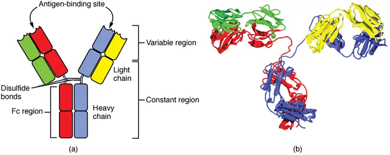
Five Classes of Antibodies and their Functions¶
In general, antibodies have two basic functions. They can act as the B cell antigen receptor or they can be secreted, circulate, and bind to a pathogen, often labeling it for identification by other forms of the immune response. Of the five antibody classes, notice that only two can function as the antigen receptor for naïve B cells: IgM and IgD (Figure 21.22). Mature B cells that leave the bone marrow express both IgM and IgD, but both antibodies have the same antigen specificity. Only IgM is secreted, however, and no other nonreceptor function for IgD has been discovered.
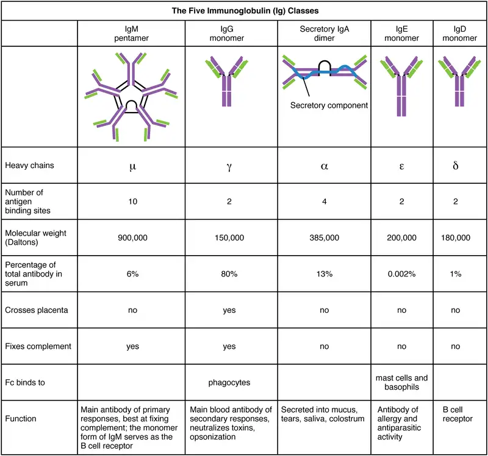
IgM consists of five four-chain structures (20 total chains with 10 identical antigen-binding sites) and is thus the largest of the antibody molecules. IgM is usually the first antibody made during a primary response. Its 10 antigen-binding sites and large shape allow it to bind well to many bacterial surfaces. It is excellent at binding complement proteins and activating the complement cascade, consistent with its role in promoting chemotaxis, opsonization, and cell lysis. Thus, it is a very effective antibody against bacteria at early stages of a primary antibody response. As the primary response proceeds, the antibody produced in a B cell can change to IgG, IgA, or IgE by the process known as class switching. Class switching is the change of one antibody class to another. While the class of antibody changes, the specificity and the antigen-binding sites do not. Thus, the antibodies made are still specific to the pathogen that stimulated the initial IgM response.
IgG is a major antibody of late primary responses and the main antibody of secondary responses in the blood. This is because class switching occurs during primary responses. IgG is a monomeric antibody that clears pathogens from the blood and can activate complement proteins (although not as well as IgM), taking advantage of its antibacterial activities. Furthermore, this class of antibody is the one that crosses the placenta to protect the developing fetus from disease exits the blood to the interstitial fluid to fight extracellular pathogens.
IgA exists in two forms, a four-chain monomer in the blood and an eight-chain structure, or dimer, in exocrine gland secretions of the mucous membranes, including mucus, saliva, and tears. Thus, dimeric IgA is the only antibody to leave the interior of the body to protect body surfaces. IgA is also of importance to newborns, because this antibody is present in mother’s breast milk (colostrum), which serves to protect the infant from disease.
IgE is usually associated with allergies and anaphylaxis. It is present in the lowest concentration in the blood, because its Fc region binds strongly to an IgE-specific Fc receptor on the surfaces of mast cells. IgE makes mast cell degranulation very specific, such that if a person is allergic to peanuts, there will be peanut-specific IgE bound to their mast cells. In this person, eating peanuts will cause the mast cells to degranulate, sometimes causing severe allergic reactions, including anaphylaxis, a severe, systemic allergic response that can cause death.
Clonal Selection of B Cells¶
Clonal selection and expansion work much the same way in B cells as in T cells. Only B cells with appropriate antigen specificity are selected for and expanded (Figure 21.23). Eventually, the plasma cells secrete antibodies with antigenic specificity identical to those that were on the surfaces of the selected B cells. Notice in the figure that both plasma cells and memory B cells are generated simultaneously.
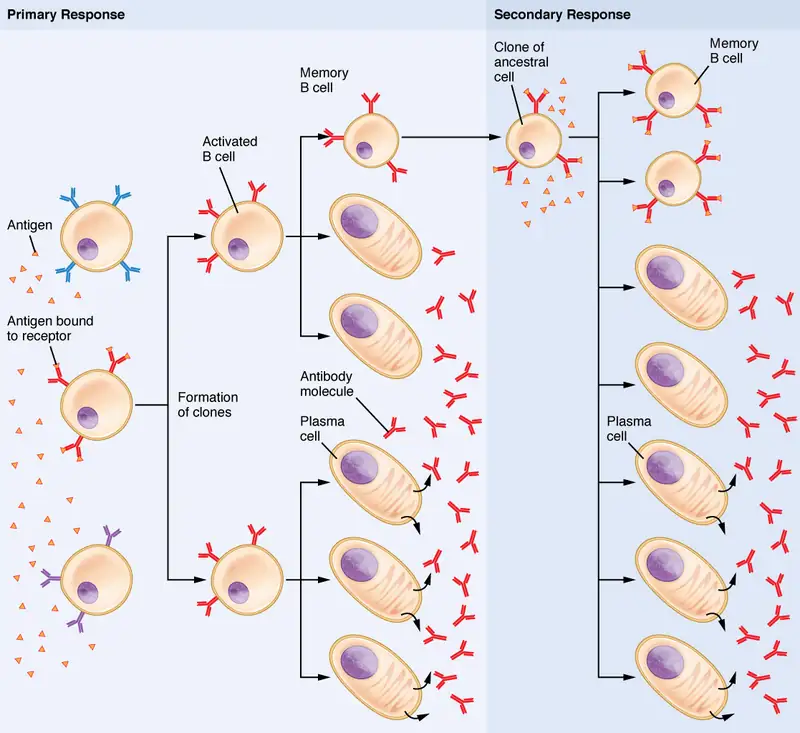
Primary versus Secondary B Cell Responses¶
Primary and secondary responses as they relate to T cells were discussed earlier. This section will look at these responses with B cells and antibody production. Because antibodies are easily obtained from blood samples, they are easy to follow and graph (Figure 21.24). As you will see from the figure, the primary response to an antigen (representing a pathogen) is delayed by several days. This is the time it takes for the B cell clones to expand and differentiate into plasma cells. The level of antibody produced is low, but it is sufficient for immune protection. The second time a person encounters the same antigen, there is no time delay, and the amount of antibody made is much higher. Thus, the secondary antibody response overwhelms the pathogens quickly and, in most situations, no symptoms are felt. When a different antigen is used, another primary response is made with its low antibody levels and time delay.
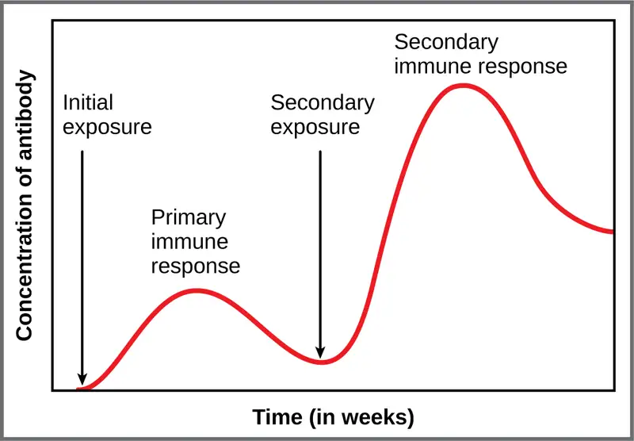
Active versus Passive Immunity¶
Immunity to pathogens, and the ability to control pathogen growth so that damage to the tissues of the body is limited, can be acquired by (1) the active development of an immune response in the infected individual or (2) the passive transfer of immune components from an immune individual to a nonimmune one. Both active and passive immunity have examples in the natural world and as part of medicine.
Active immunity is the resistance to pathogens acquired during an adaptive immune response within an individual (Table 21.6). Naturally acquired active immunity, the response to a pathogen, is the focus of this chapter. Artificially acquired active immunity involves the use of vaccines. A vaccine is a killed or weakened pathogen or its components that, when administered to a healthy individual, leads to the development of immunological memory (a weakened primary immune response) without causing much in the way of symptoms. Thus, with the use of vaccines, one can avoid the damage from disease that results from the first exposure to the pathogen, yet reap the benefits of protection from immunological memory. The advent of vaccines was one of the major medical advances of the twentieth century and led to the eradication of smallpox and the control of many infectious diseases, including polio, measles, and whooping cough.
Table 21.6
| Active versus Passive Immunity | ||
|---|---|---|
| Natural | Artificial | |
| Active | Adaptive immune response | Vaccine response |
| Passive | Trans-placental antibodies/breastfeeding | Immune globulin injections |
Passive immunity arises from the transfer of antibodies to an individual without requiring them to mount their own active immune response. Naturally acquired passive immunity is seen during fetal development. IgG is transferred from the maternal circulation to the fetus via the placenta, protecting the fetus from infection and protecting the newborn for the first few months of its life. As already stated, a newborn benefits from the IgA antibodies it obtains from milk during breastfeeding. The fetus and newborn thus benefit from the immunological memory based on the pathogens to which the pregnant person has been exposed. In medicine, artificially acquired passive immunity usually involves injections of immunoglobulins, taken from animals previously exposed to a specific pathogen. This treatment is a fast-acting method of temporarily protecting an individual who was possibly exposed to a pathogen. The downside to both types of passive immunity is the lack of the development of immunological memory. Once the antibodies are transferred, they are effective for only a limited time before they degrade.
Interactive
Immunity can be acquired in an active or passive way, and it can be natural or artificial. Watch this video to see an animated discussion of passive and active immunity. What is an example of natural immunity acquired passively?
T cell-dependent versus T cell-independent Antigens¶
As discussed previously, Th2 cells secrete cytokines that drive the production of antibodies in a B cell, responding to complex antigens such as those made by proteins. On the other hand, some antigens are T cell independent. A T cell-independent antigen usually is in the form of repeated carbohydrate moieties found on the cell walls of bacteria. Each antibody on the B cell surface has two binding sites, and the repeated nature of T cell-independent antigen leads to crosslinking of the surface antibodies on the B cell. The crosslinking is enough to activate it in the absence of T cell cytokines.
A T cell-dependent antigen, on the other hand, usually is not repeated to the same degree on the pathogen and thus does not crosslink surface antibody with the same efficiency. To elicit a response to such antigens, the B and T cells must come close together (Figure 21.25). The B cell must receive two signals to become activated. Its surface immunoglobulin must recognize native antigen. Some of this antigen is internalized, processed, and presented to the Th2 cells on a class II MHC molecule. The T cell then binds using its antigen receptor and is activated to secrete cytokines that diffuse to the B cell, finally activating it completely. Thus, the B cell receives signals from both its surface antibody and the T cell via its cytokines, and acts as a professional antigen-presenting cell in the process.
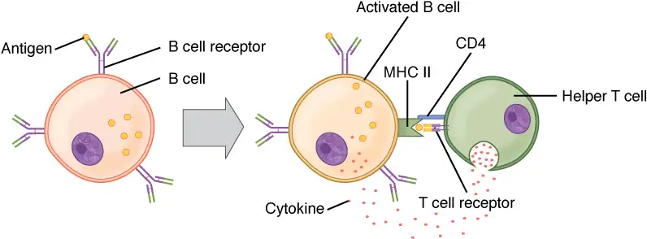
21.5 The Immune Response against Pathogens¶
Learning Objectives
By the end of this section, you will be able to:
- Explain the development of immunological competence
- Describe the mucosal immune response
- Discuss immune responses against bacterial, viral, fungal, and animal pathogens
- Describe different ways pathogens evade immune responses
Now that you understand the development of mature, naïve B cells and T cells, and some of their major functions, how do all of these various cells, proteins, and cytokines come together to actually resolve an infection? Ideally, the immune response will rid the body of a pathogen entirely. The adaptive immune response, with its rapid clonal expansion, is well suited to this purpose. Think of a primary infection as a race between the pathogen and the immune system. The pathogen bypasses barrier defenses and starts multiplying in the host’s body. During the first 4 to 5 days, the innate immune response will partially control, but not stop, pathogen growth. As the adaptive immune response gears up, however, it will begin to clear the pathogen from the body, while at the same time becoming stronger and stronger. When following antibody responses in patients with a particular disease such as a virus, this clearance is referred to as seroconversion (sero- = “serum”). Seroconversion is the reciprocal relationship between virus levels in the blood and antibody levels. As the antibody levels rise, the virus levels decline, and this is a sign that the immune response is being at least partially effective (partially, because in many diseases, seroconversion does not necessarily mean a patient is getting well).
An excellent example of this is seroconversion during HIV disease (Figure 21.26). Notice that antibodies are made early in this disease, and the increase in anti-HIV antibodies correlates with a decrease in detectable virus in the blood. Although these antibodies are an important marker for diagnosing the disease, they are not sufficient to completely clear the virus. Several years later, the vast majority of these individuals, if untreated, will lose their entire adaptive immune response, including the ability to make antibodies, during the final stages of AIDS.
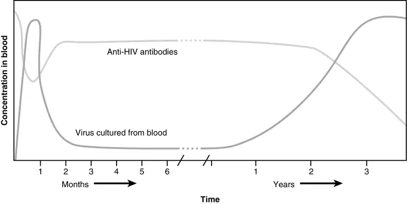
Everyday Connection: Disinfectants: Fighting the Good Fight?
“Wash your hands!” Parents have been telling their children this for generations. Dirty hands can spread disease. But is it possible to get rid of enough pathogens that children will never get sick? Are children who avoid exposure to pathogens better off? The answers to both these questions appears to be no.
Antibacterial wipes, soaps, gels, and even toys with antibacterial substances embedded in their plastic are ubiquitous in our society. Still, these products do not rid the skin and gastrointestinal tract of bacteria, and it would be harmful to our health if they did. We need these nonpathogenic bacteria on and within our bodies to keep the pathogenic ones from growing. The urge to keep children perfectly clean is thus probably misguided. Children will get sick anyway, and the later benefits of immunological memory far outweigh the minor discomforts of most childhood diseases. In fact, getting diseases such as chickenpox or measles later in life is much harder on the adult and are associated with symptoms significantly worse than those seen in the childhood illnesses. Of course, vaccinations help children avoid some illnesses, but there are so many pathogens, we will never be immune to them all.
Could over-cleanliness be the reason that allergies are increasing in more developed countries? Some scientists think so. Allergies are based on an IgE antibody response. Many scientists think the system evolved to help the body rid itself of worm parasites. The hygiene theory is the idea that the immune system is geared to respond to antigens, and if pathogens are not present, it will respond instead to inappropriate antigens such as allergens and self-antigens. This is one explanation for the rising incidence of allergies in developed countries, where the response to nonpathogens like pollen, shrimp, and cat dander cause allergic responses while not serving any protective function.
The Mucosal Immune Response¶
Mucosal tissues are major barriers to the entry of pathogens into the body. The IgA (and sometimes IgM) antibodies in mucus and other secretions can bind to the pathogen, and in the cases of many viruses and bacteria, neutralize them. Neutralization is the process of coating a pathogen with antibodies, making it physically impossible for the pathogen to bind to receptors. Neutralization, which occurs in the blood, lymph, and other body fluids and secretions, protects the body constantly. Neutralizing antibodies are the basis for the disease protection offered by vaccines. Vaccinations for diseases that commonly enter the body via mucous membranes, such as influenza, are usually formulated to enhance IgA production.
Immune responses in some mucosal tissues such as the Peyer’s patches (see Figure 21.11) in the small intestine take up particulate antigens by specialized cells known as microfold or M cells (Figure 21.27). These cells allow the body to sample potential pathogens from the intestinal lumen. Dendritic cells then take the antigen to the regional lymph nodes, where an immune response is mounted.
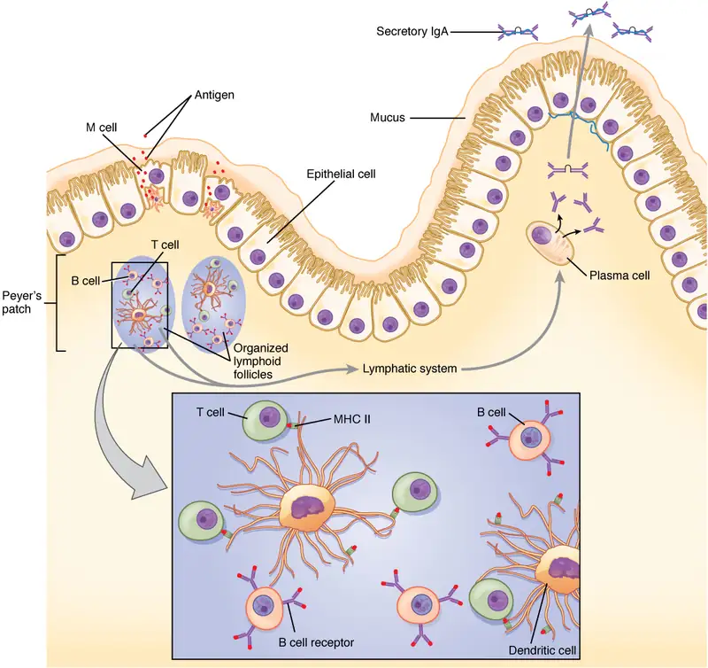
Defenses against Bacteria and Fungi¶
The body fights bacterial pathogens with a wide variety of immunological mechanisms, essentially trying to find one that is effective. Bacteria such as Mycobacterium leprae, the cause of leprosy, are resistant to lysosomal enzymes and can persist in macrophage organelles or escape into the cytosol. In such situations, infected macrophages receiving cytokine signals from Th1 cells turn on special metabolic pathways. Macrophage oxidative metabolism is hostile to intracellular bacteria, often relying on the production of nitric oxide to kill the bacteria inside the macrophage.
Fungal infections, such as those from Aspergillus, Candida, and Pneumocystis, are largely opportunistic infections that take advantage of suppressed immune responses. Most of the same immune mechanisms effective against bacteria have similar effects on fungi, both of which have characteristic cell wall structures that protect their cells.
Defenses against Parasites¶
Worm parasites such as helminths are seen as the primary reason why the mucosal immune response, IgE-mediated allergy and asthma, and eosinophils evolved. These parasites were at one time very common in human society. When infecting a human, often via contaminated food, some worms take up residence in the gastrointestinal tract. Eosinophils are attracted to the site by T cell cytokines, which release their granule contents upon their arrival. Mast cell degranulation also occurs, and the fluid leakage caused by the increase in local vascular permeability is thought to have a flushing action on the parasite, expelling its larvae from the body. Furthermore, if IgE labels the parasite, the eosinophils can bind to it by its Fc receptor.
Defenses against Viruses¶
The primary mechanisms against viruses are NK cells, interferons, and cytotoxic T cells. Antibodies are effective against viruses mostly during protection, where an immune individual can neutralize them based on a previous exposure. Antibodies have no effect on viruses or other intracellular pathogens once they enter the cell, since antibodies are not able to penetrate the plasma membrane of the cell. Many cells respond to viral infections by downregulating their expression of MHC class I molecules. This is to the advantage of the virus, because without class I expression, cytotoxic T cells have no activity. NK cells, however, can recognize virally infected class I-negative cells and destroy them. Thus, NK and cytotoxic T cells have complementary activities against virally infected cells.
Interferons have activity in slowing viral replication and are used in the treatment of certain viral diseases, such as hepatitis B and C, but their ability to eliminate the virus completely is limited. The cytotoxic T cell response, though, is key, as it eventually overwhelms the virus and kills infected cells before the virus can complete its replicative cycle. Clonal expansion and the ability of cytotoxic T cells to kill more than one target cell make these cells especially effective against viruses. In fact, without cytotoxic T cells, it is likely that humans would all die at some point from a viral infection (if no vaccine were available).
Evasion of the Immune System by Pathogens¶
It is important to keep in mind that although the immune system has evolved to be able to control many pathogens, pathogens themselves have evolved ways to evade the immune response. An example already mentioned is in Mycobacterium tuberculosis, which has evolved a complex cell wall that is resistant to the digestive enzymes of the macrophages that ingest them, and thus persists in the host, causing the chronic disease tuberculosis. This section briefly summarizes other ways in which pathogens can “outwit” immune responses. But keep in mind, although it seems as if pathogens have a will of their own, they do not. All of these evasive “strategies” arose strictly by evolution, driven by selection.
Bacteria sometimes evade immune responses because they exist in multiple strains, such as different groups of Staphylococcus aureus. S. aureus is commonly found in minor skin infections, such as boils, and some healthy people harbor it in their nose. One small group of strains of this bacterium, however, called methicillin-resistant Staphylococcus aureus, has become resistant to multiple antibiotics and is essentially untreatable. Different bacterial strains differ in the antigens on their surfaces. The immune response against one strain (antigen) does not affect the other; thus, the species survives.
Another method of immune evasion is mutation. Because viruses’ surface molecules mutate continuously, viruses like influenza change enough each year that the flu vaccine for one year may not protect against the flu common to the next. New vaccine formulations must be derived for each flu season.
Genetic recombination—the combining of gene segments from two different pathogens—is an efficient form of immune evasion. For example, the influenza virus contains gene segments that can recombine when two different viruses infect the same cell. Recombination between human and pig influenza viruses led to the 2010 H1N1 swine flu outbreak.
Pathogens can produce immunosuppressive molecules that impair immune function, and there are several different types. Viruses are especially good at evading the immune response in this way, and many types of viruses have been shown to suppress the host immune response in ways much more subtle than the wholesale destruction caused by HIV.
21.6 Diseases Associated with Depressed or Overactive Immune Responses¶
Learning Objectives
By the end of this section, you will be able to:
- Discuss inherited and acquired immunodeficiencies
- Explain the four types of hypersensitivity and how they differ
- Give an example of how autoimmune disease breaks tolerance
This section is about how the immune system goes wrong. When it goes haywire, and becomes too weak or too strong, it leads to a state of disease. The factors that maintain immunological homeostasis are complex and incompletely understood.
Immunodeficiencies¶
As you have seen, the immune system is quite complex. It has many pathways using many cell types and signals. Because it is so complex, there are many ways for it to go wrong. Inherited immunodeficiencies arise from gene mutations that affect specific components of the immune response. There are also acquired immunodeficiencies with potentially devastating effects on the immune system, such as HIV.
Inherited Immunodeficiencies¶
A list of all inherited immunodeficiencies is well beyond the scope of this book. The list is almost as long as the list of cells, proteins, and signaling molecules of the immune system itself. Some deficiencies, such as those for complement, cause only a higher susceptibility to some Gram-negative bacteria. Others are more severe in their consequences. Certainly, the most serious of the inherited immunodeficiencies is severe combined immunodeficiency disease (SCID). This disease is complex because it is caused by many different genetic defects. What groups them together is the fact that both the B cell and T cell arms of the adaptive immune response are affected.
Children with this disease usually die of opportunistic infections within their first year of life unless they receive a bone marrow transplant. Such a procedure had not yet been perfected for David Vetter, the “boy in the bubble,” who was treated for SCID by having to live almost his entire life in a sterile plastic cocoon for the 12 years before his death from infection in 1984. One of the features that make bone marrow transplants work as well as they do is the proliferative capability of hematopoietic stem cells of the bone marrow. Only a small amount of bone marrow from a healthy donor is given intravenously to the recipient. It finds its own way to the bone where it populates it, eventually reconstituting the patient’s immune system, which is usually destroyed beforehand by treatment with radiation or chemotherapeutic drugs.
New treatments for SCID using gene therapy, inserting nondefective genes into cells taken from the patient and giving them back, have the advantage of not needing the tissue match required for standard transplants. Although not a standard treatment, this approach holds promise, especially for those in whom standard bone marrow transplantation has failed.
Human Immunodeficiency Virus/AIDS¶
Although many viruses cause suppression of the immune system, only one wipes it out completely, and that is the previously mentioned HIV. It is worth discussing the biology of this virus, which can lead to the well-known AIDS, so that its full effects on the immune system can be understood. The virus is transmitted through semen, vaginal fluids, and blood, and can be caught by risky sexual behaviors and the sharing of needles by intravenous drug users. There are sometimes, but not always, flu-like symptoms in the first 1 to 2 weeks after infection. This is later followed by seroconversion. The anti-HIV antibodies formed during seroconversion are the basis for most initial HIV screening done in the United States. Because seroconversion takes different lengths of time in different individuals, multiple AIDS tests are given months apart to confirm or eliminate the possibility of infection.
After seroconversion, the amount of virus circulating in the blood drops and stays at a low level for several years. During this time, the levels of CD4+cells, especially helper T cells, decline steadily, until at some point, the immune response is so weak that opportunistic disease and eventually death result. HIV uses CD4 as the receptor to get inside cells, but it also needs a co-receptor, such as CCR5 or CXCR4. These co-receptors, which usually bind to chemokines, present another target for anti-HIV drug development. Although other antigen-presenting cells are infected with HIV, given that CD4+ helper T cells play an important role in T cell immune responses and antibody responses, it should be no surprise that both types of immune responses are eventually seriously compromised.
Treatment for the disease consists of drugs that target virally encoded proteins that are necessary for viral replication but are absent from normal human cells. By targeting the virus itself and sparing the cells, this approach has been successful in significantly prolonging the lives of HIV-positive individuals. On the other hand, an HIV vaccine has been 30 years in development and is still years away. Because the virus mutates rapidly to evade the immune system, scientists have been looking for parts of the virus that do not change and thus would be good targets for a vaccine candidate.
Hypersensitivities¶
The word “hypersensitivity” simply means sensitive beyond normal levels of activation. Allergies and inflammatory responses to nonpathogenic environmental substances have been observed since the dawn of history. Hypersensitivity is a medical term describing symptoms that are now known to be caused by unrelated mechanisms of immunity. Still, it is useful for this discussion to use the four types of hypersensitivities as a guide to understand these mechanisms (Figure 21.28).
![This table describes different types of hypersensitivity. In Type I (IgE-Mediated Hypersensitivity), IgE is bound to mast cells via its Fc portion. When an allergen binds to these antibodies, crosslinking of IgE induces degranulation. Type I causes localized and systemic anaphylaxis, seasonal allergies including hay fever, food allergies such as those to shellfish and peanuts, hives, and eczema. In Type II (IgG-Mediated Hypersensitivity), cells are destroyed by bound antibody, either by activation of complement or by a cytotoxic T cell with an Fc receptor for the antibody (ADCC). Examples are when red blood cells are destroyed by complement and antibody during a transfusion of mismatched blood types or during erythroblastosis fetalis. In Type III (Immune Complex-Mediated Hypersensitivity), antigen-antibody complexes are deposited in tissues, causing activation of complement, which attracts neutrophils to the site. Most common forms of immune complex disease are seen in glomerulonephritis, rheumatoid arthritis, and systemic lupus erythematosus. In Type IV (Cell-Mediated Hypersensitivity), Th1 cells secrete cytokines, which activate macrophages and cytotoxic T cells and can cause macrophage accumulation at the site. Most common forms are contact dermatitis, tuberculin reaction, and autoimmune diseases such as diabetes mellitus type I, multiple sclerosis, and rheumatoid arthritis.](img/2228-immune-hypersensitivity-new.webp)
Immediate (Type I) Hypersensitivity¶
Antigens that cause allergic responses are often referred to as allergens. The specificity of the immediate hypersensitivity response is predicated on the binding of allergen-specific IgE to the mast cell surface. The process of producing allergen-specific IgE is called sensitization, and is a necessary prerequisite for the symptoms of immediate hypersensitivity to occur. Allergies and allergic asthma are mediated by mast cell degranulation that is caused by the crosslinking of the antigen-specific IgE molecules on the mast cell surface. The mediators released have various vasoactive effects already discussed, but the major symptoms of inhaled allergens are the nasal edema and runny nose caused by the increased vascular permeability and increased blood flow of nasal blood vessels. As these mediators are released with mast cell degranulation, type I hypersensitivity reactions are usually rapid and occur within just a few minutes, hence the term immediate hypersensitivity.
Most allergens are in themselves nonpathogenic and therefore innocuous. Some individuals develop mild allergies, which are usually treated with antihistamines. Others develop severe allergies that may cause anaphylactic shock, which can potentially be fatal within 20 to 30 minutes if untreated. This drop in blood pressure (shock) with accompanying contractions of bronchial smooth muscle is caused by systemic mast cell degranulation when an allergen is eaten (for example, shellfish and peanuts), injected (by a bee sting or being administered penicillin), or inhaled (asthma). Because epinephrine raises blood pressure and relaxes bronchial smooth muscle, it is routinely used to counteract the effects of anaphylaxis and can be lifesaving. Patients with known severe allergies are encouraged to keep automatic epinephrine injectors with them at all times, especially when away from easy access to hospitals.
Allergists use skin testing to identify allergens in type I hypersensitivity. In skin testing, allergen extracts are injected into the epidermis, and a positive result of a soft, pale swelling at the site surrounded by a red zone (called the wheal and flare response), caused by the release of histamine and the granule mediators, usually occurs within 30 minutes. The soft center is due to fluid leaking from the blood vessels and the redness is caused by the increased blood flow to the area that results from the dilation of local blood vessels at the site.
Type II and Type III Hypersensitivities¶
Type II hypersensitivity, which involves IgG-mediated lysis of cells by complement proteins, occurs during mismatched blood transfusions and blood compatibility diseases such as erythroblastosis fetalis (see section on transplantation). Type III hypersensitivity occurs with diseases such as systemic lupus erythematosus, where soluble antigens, mostly DNA and other material from the nucleus, and antibodies accumulate in the blood to the point that the antigen and antibody precipitate along blood vessel linings. These immune complexes often lodge in the kidneys, joints, and other organs where they can activate complement proteins and cause inflammation.
Delayed (Type IV) Hypersensitivity¶
Delayed hypersensitivity, or type IV hypersensitivity, is basically a standard cellular immune response. In delayed hypersensitivity, the first exposure to an antigen is called sensitization, such that on re-exposure, a secondary cellular response results, secreting cytokines that recruit macrophages and other phagocytes to the site. These sensitized T cells, of the Th1 class, will also activate cytotoxic T cells. The time it takes for this reaction to occur accounts for the 24- to 72-hour delay in development.
The classical test for delayed hypersensitivity is the tuberculin test for tuberculosis, where bacterial proteins from M. tuberculosis are injected into the skin. A couple of days later, a positive test is indicated by a raised red area that is hard to the touch, called an induration, which is a consequence of the cellular infiltrate, an accumulation of activated macrophages. A positive tuberculin test means that the patient has been exposed to the bacteria and exhibits a cellular immune response to it.
Another type of delayed hypersensitivity is contact sensitivity, where substances such as the metal nickel cause a red and swollen area upon contact with the skin. The individual must have been previously sensitized to the metal. A much more severe case of contact sensitivity is poison ivy, but many of the harshest symptoms of the reaction are associated with the toxicity of its oils and are not T cell mediated.
Autoimmune Responses¶
The worst cases of the immune system over-reacting are autoimmune diseases. Somehow, tolerance breaks down and the immune systems in individuals with these diseases begin to attack their own bodies, causing significant damage. The trigger for these diseases is, more often than not, unknown, and the treatments are usually based on resolving the symptoms using immunosuppressive and anti-inflammatory drugs such as steroids. These diseases can be localized and crippling, as in rheumatoid arthritis, or diffuse in the body with multiple symptoms that differ in different individuals, as is the case with systemic lupus erythematosus (Figure 21.29).
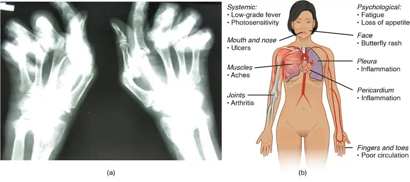
Environmental triggers seem to play large roles in autoimmune responses. One explanation for the breakdown of tolerance is that, after certain bacterial infections, an immune response to a component of the bacterium cross-reacts with a self-antigen. This mechanism is seen in rheumatic fever, a result of infection with Streptococcus bacteria, which causes strep throat. The antibodies to this pathogen’s M protein cross-react with an antigenic component of heart myosin, a major contractile protein of the heart that is critical to its normal function. The antibody binds to these molecules and activates complement proteins, causing damage to the heart, especially to the heart valves. On the other hand, some theories propose that having multiple common infectious diseases actually prevents autoimmune responses. The fact that autoimmune diseases are rare in countries that have a high incidence of infectious diseases supports this idea, another example of the hygiene hypothesis discussed earlier in this chapter.
There are genetic factors in autoimmune diseases as well. Some diseases are associated with the MHC genes that an individual expresses. The reason for this association is likely because if one’s MHC molecules are not able to present a certain self-antigen, then that particular autoimmune disease cannot occur. Overall, there are more than 80 different autoimmune diseases, which are a significant health problem in the elderly. Table 21.7 lists several of the most common autoimmune diseases, the antigens that are targeted, and the segment of the adaptive immune response that causes the damage.
Table 21.7
| Autoimmune Diseases | ||
|---|---|---|
| Disease | Autoantigen | Symptoms |
| Celiac disease | Tissue transglutaminase | Damage to small intestine |
| Diabetes mellitus type I | Beta cells of pancreas | Low insulin production; inability to regulate serum glucose |
| Graves’ disease | Thyroid-stimulating hormone receptor (antibody mimics hormone and stimulates receptor) | Hyperthyroidism |
| Hashimoto’s thyroiditis | Thyroid-stimulating hormone receptor (antibody blocks receptor) | Hypothyroidism |
| Lupus erythematosus | Nuclear DNA and proteins | Damage of many body systems |
| Myasthenia gravis | Acetylcholine receptor in neuromuscular junctions | Debilitating muscle weakness |
| Rheumatoid arthritis | Joint capsule antigens | Chronic inflammation of joints |
21.7 Transplantation and Cancer Immunology¶
Learning Objectives
By the end of this section, you will be able to:
- Explain why blood typing is important and what happens when mismatched blood is used in a transfusion
- Describe how tissue typing is done during organ transplantation and the role of transplant anti-rejection drugs
- Show how the immune response is able to control some cancers and how this immune response might be enhanced by cancer vaccines
The immune responses to transplanted organs and to cancer cells are both important medical issues. With the use of tissue typing and anti-rejection drugs, transplantation of organs and the control of the anti-transplant immune response have made huge strides in the past 50 years. Today, these procedures are commonplace. Tissue typing is the determination of MHC molecules in the tissue to be transplanted to better match the donor to the recipient. The immune response to cancer, on the other hand, has been more difficult to understand and control. Although it is clear that the immune system can recognize some cancers and control them, others seem to be resistant to immune mechanisms.
The Rh Factor¶
Red blood cells can be typed based on their surface antigens. ABO blood type, in which individuals are type A, B, AB, or O according to their genetics, is one example. A separate antigen system seen on red blood cells is the Rh antigen. When someone is “A positive” for example, the positive refers to the presence of the Rh antigen, whereas someone who is “A negative” would lack this molecule.
An interesting consequence of Rh factor expression is seen in erythroblastosis fetalis, a hemolytic disease of the newborn (Figure 21.30). This disease occurs when people negative for Rh antigen have multiple Rh-positive children. During the birth of a first Rh-positive child, the birth parent makes a primary anti-Rh antibody response to the fetal blood cells that enter the pregnant person's bloodstream. If the same parent has a second Rh-positive child, IgG antibodies against Rh-positive blood mounted during this secondary response cross the placenta and attack the fetal blood, causing anemia. This is a consequence of the fact that the fetus is not genetically identical to the birth parent, and thus the parent is capable of mounting an immune response against it. This disease is treated with antibodies specific for Rh factor. These are given to the pregnant person during the first and subsequent births, destroying any fetal blood that might enter their system and preventing the immune response.
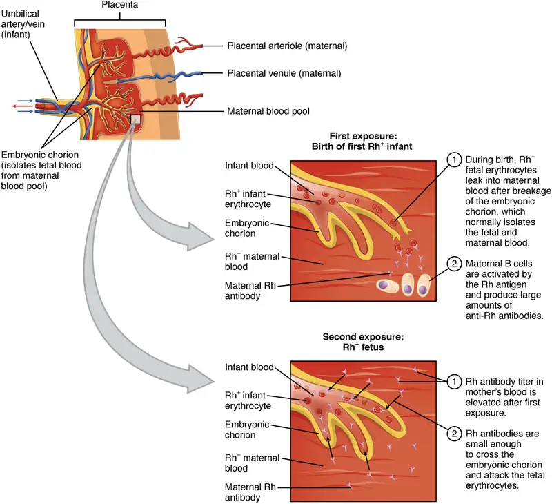
Tissue Transplantation¶
Tissue transplantation is more complicated than blood transfusions because of two characteristics of MHC molecules. These molecules are the major cause of transplant rejection (hence the name “histocompatibility”). MHC polygeny refers to the multiple MHC proteins on cells, and MHC polymorphism refers to the multiple alleles for each individual MHC locus. Thus, there are many alleles in the human population that can be expressed (Table 21.8 and Table 21.9). When a donor organ expresses MHC molecules that are different from the recipient, the latter will often mount a cytotoxic T cell response to the organ and reject it. Histologically, if a biopsy of a transplanted organ exhibits massive infiltration of T lymphocytes within the first weeks after transplant, it is a sign that the transplant is likely to fail. The response is a classical, and very specific, primary T cell immune response. As far as medicine is concerned, the immune response in this scenario does the patient no good at all and causes significant harm.
Table 21.8
| Partial Table of Alleles of the Human MHC (Class I) | ||
|---|---|---|
| Gene | # of alleles | # of possible MHC I protein components |
| A | 2132 | 1527 |
| B | 2798 | 2110 |
| C | 1672 | 1200 |
| E | 11 | 3 |
| F | 22 | 4 |
| G | 50 | 16 |
Table 21.9
| Partial Table of Alleles of the Human MHC (Class II) | ||
|---|---|---|
| Gene | # of alleles | # of possible MHC II protein components |
| DRA | 7 | 2 |
| DRB | 1297 | 958 |
| DQA1 | 49 | 31 |
| DQB1 | 179 | 128 |
| DPA1 | 36 | 18 |
| DPB1 | 158 | 136 |
| DMA | 7 | 4 |
| DMB | 13 | 7 |
| DOA | 12 | 3 |
| DOB | 13 | 5 |
Immunosuppressive drugs such as cyclosporine A have made transplants more successful, but matching the MHC molecules is still key. In humans, there are six MHC molecules that show the most polymorphisms, three class I molecules (A, B, and C) and three class II molecules called DP, DQ, and DR. A successful transplant usually requires a match between at least 3–4 of these molecules, with more matches associated with greater success. Family members, since they share a similar genetic background, are much more likely to share MHC molecules than unrelated individuals do. In fact, due to the extensive polymorphisms in these MHC molecules, unrelated donors are found only through a worldwide database. The system is not foolproof however, as there are not enough individuals in the system to provide the organs necessary to treat all patients needing them.
One disease of transplantation occurs with bone marrow transplants, which are used to treat various diseases, including SCID and leukemia. Because the bone marrow cells being transplanted contain lymphocytes capable of mounting an immune response, and because the recipient’s immune response has been destroyed before receiving the transplant, the donor cells may attack the recipient tissues, causing graft-versus-host disease. Symptoms of this disease, which usually include a rash and damage to the liver and mucosa, are variable, and attempts have been made to moderate the disease by first removing mature T cells from the donor bone marrow before transplanting it.
Immune Responses Against Cancer¶
It is clear that with some cancers, for example Kaposi’s sarcoma, a healthy immune system does a good job at controlling them (Figure 21.31). This disease, which is caused by the human herpesvirus, is almost never observed in individuals with strong immune systems, such as the young and immunocompetent. Other examples of cancers caused by viruses include liver cancer caused by the hepatitis B virus and cervical cancer caused by the human papilloma virus. As these last two viruses have vaccines available for them, getting vaccinated can help prevent these two types of cancer by stimulating the immune response.
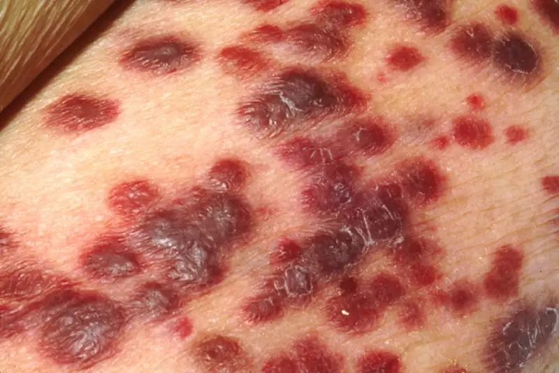
On the other hand, as cancer cells are often able to divide and mutate rapidly, they may escape the immune response, just as certain pathogens such as HIV do. There are three stages in the immune response to many cancers: elimination, equilibrium, and escape. Elimination occurs when the immune response first develops toward tumor-specific antigens specific to the cancer and actively kills most cancer cells, followed by a period of controlled equilibrium during which the remaining cancer cells are held in check. Unfortunately, many cancers mutate, so they no longer express any specific antigens for the immune system to respond to, and a subpopulation of cancer cells escapes the immune response, continuing the disease process.
This fact has led to extensive research in trying to develop ways to enhance the early immune response to completely eliminate the early cancer and thus prevent a later escape. One method that has shown some success is the use of cancer vaccines, which differ from viral and bacterial vaccines in that they are directed against the cells of one’s own body. Treated cancer cells are injected into cancer patients to enhance their anti-cancer immune response and thereby prolong survival. The immune system has the capability to detect these cancer cells and proliferate faster than the cancer cells do, overwhelming the cancer in a similar way as they do for viruses. Cancer vaccines have been developed for malignant melanoma, a highly fatal skin cancer, and renal (kidney) cell carcinoma. These vaccines are still in the development stages, but some positive and encouraging results have been obtained clinically.
It is tempting to focus on the complexity of the immune system and the problems it causes as a negative. The upside to immunity, however, is so much greater: The benefit of staying alive far outweighs the negatives caused when the system does sometimes go awry. Working on “autopilot,” the immune system helps to maintain your health and kill pathogens. The only time you really miss the immune response is when it is not being effective and illness results, or, as in the extreme case of HIV disease, the immune system is gone completely.
Everyday Connection: How Stress Affects the Immune Response: The Connections between the Immune, Nervous, and Endocrine Systems of the Body
The immune system cannot exist in isolation. After all, it has to protect the entire body from infection. Therefore, the immune system is required to interact with other organ systems, sometimes in complex ways. Thirty years of research focusing on the connections between the immune system, the central nervous system, and the endocrine system have led to a new science with the unwieldy name of called psychoneuroimmunology. The physical connections between these systems have been known for centuries: All primary and secondary organs are connected to sympathetic nerves. What is more complex, though, is the interaction of neurotransmitters, hormones, cytokines, and other soluble signaling molecules, and the mechanism of “crosstalk” between the systems. For example, white blood cells, including lymphocytes and phagocytes, have receptors for various neurotransmitters released by associated neurons. Additionally, hormones such as cortisol (naturally produced by the adrenal cortex) and prednisone (synthetic) are well known for their abilities to suppress T cell immune mechanisms, hence, their prominent use in medicine as long-term, anti-inflammatory drugs.
One well-established interaction of the immune, nervous, and endocrine systems is the effect of stress on immune health. In the human vertebrate evolutionary past, stress was associated with the fight-or-flight response, largely mediated by the central nervous system and the adrenal medulla. This stress was necessary for survival. The physical action of fighting or running, whichever the animal decides, usually resolves the problem in one way or another. On the other hand, there are no physical actions to resolve most modern day stresses, including short-term stressors like taking examinations and long-term stressors such as being unemployed or losing a spouse. The effect of stress can be felt by nearly every organ system, and the immune system is no exception (Table 21.10).
Table 21.10
| Effects of Stress on Body Systems | |
|---|---|
| System | Stress-related illness |
| Integumentary system | Acne, rashes, irritation |
| Nervous system | Headaches, depression, anxiety, irritability, loss of appetite, lack of motivation, reduced mental performance |
| Muscular and skeletal systems | Muscle and joint pain, neck and shoulder pain |
| Circulatory system | Increased heart rate, hypertension, increased probability of heart attacks |
| Digestive system | Indigestion, heartburn, stomach pain, nausea, diarrhea, constipation, weight gain or loss |
| Immune system | Depressed ability to fight infections |
| Male reproductive system | Lowered sperm production, impotence, reduced sexual desire |
| Female reproductive system | Irregular menstrual cycle, reduced sexual desire |
At one time, it was assumed that all types of stress reduced all aspects of the immune response, but the last few decades of research have painted a different picture. First, most short-term stress does not impair the immune system in healthy individuals enough to lead to a greater incidence of diseases. However, older individuals and those with suppressed immune responses due to disease or immunosuppressive drugs may respond even to short-term stressors by getting sicker more often. It has been found that short-term stress diverts the body’s resources towards enhancing innate immune responses, which have the ability to act fast and would seem to help the body prepare better for possible infections associated with the trauma that may result from a fight-or-flight exchange. The diverting of resources away from the adaptive immune response, however, causes its own share of problems in fighting disease.
Chronic stress, unlike short-term stress, may inhibit immune responses even in otherwise healthy adults. The suppression of both innate and adaptive immune responses is clearly associated with increases in some diseases, as seen when individuals lose a spouse or have other long-term stresses, such as taking care of a spouse with a fatal disease or dementia. The new science of psychoneuroimmunology, while still in its relative infancy, has great potential to make exciting advances in our understanding of how the nervous, endocrine, and immune systems have evolved together and communicate with each other.
Chapter Review¶
Key Terms¶
- active immunity
- immunity developed from an individual’s own immune system
- acute inflammation
- inflammation occurring for a limited time period; rapidly developing
- adaptive immune response
- relatively slow but very specific and effective immune response controlled by lymphocytes
- afferent lymphatic vessels
- lead into a lymph node
- antibody
- antigen-specific protein secreted by plasma cells; immunoglobulin
- antigen
- molecule recognized by the receptors of B and T lymphocytes
- antigen presentation
- binding of processed antigen to the protein-binding cleft of a major histocompatibility complex molecule
- antigen processing
- internalization and digestion of antigen in an antigen-presenting cell
- antigen receptor
- two-chain receptor by which lymphocytes recognize antigen
- antigenic determinant
- (also, epitope) one of the chemical groups recognized by a single type of lymphocyte antigen receptor
- B cells
- lymphocytes that act by differentiating into an antibody-secreting plasma cell
- barrier defenses
- antipathogen defenses deriving from a barrier that physically prevents pathogens from entering the body to establish an infection
- bone marrow
- tissue found inside bones; the site of all blood cell differentiation and maturation of B lymphocytes
- bronchus-associated lymphoid tissue (BALT)
- lymphoid nodule associated with the respiratory tract
- central tolerance
- B cell tolerance induced in immature B cells of the bone marrow
- chemokine
- soluble, long-range, cell-to-cell communication molecule
- chronic inflammation
- inflammation occurring for long periods of time
- chyle
- lipid-rich lymph inside the lymphatic capillaries of the small intestine
- cisterna chyli
- bag-like vessel that forms the beginning of the thoracic duct
- class switching
- ability of B cells to change the class of antibody they produce without altering the specificity for antigen
- clonal anergy
- process whereby B cells that react to soluble antigens in bone marrow are made nonfunctional
- clonal deletion
- removal of self-reactive B cells by inducing apoptosis
- clonal expansion
- growth of a clone of selected lymphocytes
- clonal selection
- stimulating growth of lymphocytes that have specific receptors
- clone
- group of lymphocytes sharing the same antigen receptor
- complement
- enzymatic cascade of constitutive blood proteins that have antipathogen effects, including the direct killing of bacteria
- constant region domain
- part of a lymphocyte antigen receptor that does not vary much between different receptor types
- cytokine
- soluble, short-range, cell-to-cell communication molecule
- cytotoxic T cells (Tc)
- T lymphocytes with the ability to induce apoptosis in target cells
- delayed hypersensitivity
- (type IV) T cell-mediated immune response against pathogens infiltrating interstitial tissues, causing cellular infiltrate
- early induced immune response
- includes antimicrobial proteins stimulated during the first several days of an infection
- effector T cells
- immune cells with a direct, adverse effect on a pathogen
- efferent lymphatic vessels
- lead out of a lymph node
- erythroblastosis fetalis
- disease of Rh factor-positive newborns in Rh-negative mothers with multiple Rh-positive children; resulting from the action of maternal antibodies against fetal blood
- fas ligand
- molecule expressed on cytotoxic T cells and NK cells that binds to the fas molecule on a target cell and induces it do undergo apoptosis
- Fc region
- in an antibody molecule, the site where the two termini of the heavy chains come together; many cells have receptors for this portion of the antibody, adding functionality to these molecules
- germinal centers
- clusters of rapidly proliferating B cells found in secondary lymphoid tissues
- graft-versus-host disease
- in bone marrow transplants; occurs when the transplanted cells mount an immune response against the recipient
- granzyme
- apoptosis-inducing substance contained in granules of NK cells and cytotoxic T cells
- heavy chain
- larger protein chain of an antibody
- helper T cells (Th)
- T cells that secrete cytokines to enhance other immune responses, involved in activation of both B and T cell lymphocytes
- high endothelial venules
- vessels containing unique endothelial cells specialized to allow migration of lymphocytes from the blood to the lymph node
- histamine
- vasoactive mediator in granules of mast cells and is the primary cause of allergies and anaphylactic shock
- IgA
- antibody whose dimer is secreted by exocrine glands, is especially effective against digestive and respiratory pathogens, and can pass immunity to an infant through breastfeeding
- IgD
- class of antibody whose only known function is as a receptor on naive B cells; important in B cell activation
- IgE
- antibody that binds to mast cells and causes antigen-specific degranulation during an allergic response
- IgG
- main blood antibody of late primary and early secondary responses; passed from carrier to unborn child via placenta
- IgM
- antibody whose monomer is a surface receptor of naive B cells; the pentamer is the first antibody made blood plasma during primary responses
- immediate hypersensitivity
- (type I) IgE-mediated mast cell degranulation caused by crosslinking of surface IgE by antigen
- immune system
- series of barriers, cells, and soluble mediators that combine to response to infections of the body with pathogenic organisms
- immunoglobulin
- protein antibody; occurs as one of five main classes
- immunological memory
- ability of the adaptive immune response to mount a stronger and faster immune response upon re-exposure to a pathogen
- inflammation
- basic innate immune response characterized by heat, redness, pain, and swelling
- innate immune response
- rapid but relatively nonspecific immune response
- interferons
- early induced proteins made in virally infected cells that cause nearby cells to make antiviral proteins
- light chain
- small protein chain of an antibody
- lymph
- fluid contained within the lymphatic system
- lymph node
- one of the bean-shaped organs found associated with the lymphatic vessels
- lymphatic capillaries
- smallest of the lymphatic vessels and the origin of lymph flow
- lymphatic system
- network of lymphatic vessels, lymph nodes, and ducts that carries lymph from the tissues and back to the bloodstream.
- lymphatic trunks
- large lymphatics that collect lymph from smaller lymphatic vessels and empties into the blood via lymphatic ducts
- lymphocytes
- white blood cells characterized by a large nucleus and small rim of cytoplasm
- lymphoid nodules
- unencapsulated patches of lymphoid tissue found throughout the body
- macrophage
- ameboid phagocyte found in several tissues throughout the body
- macrophage oxidative metabolism
- metabolism turned on in macrophages by T cell signals that help destroy intracellular bacteria
- major histocompatibility complex (MHC)
- gene cluster whose proteins present antigens to T cells
- mast cell
- cell found in the skin and the lining of body cells that contains cytoplasmic granules with vasoactive mediators such as histamine
- memory T cells
- long-lived immune cell reserved for future exposure to a pathogen
- MHC class I
- found on most cells of the body, it binds to the CD8 molecule on T cells
- MHC class II
- found on macrophages, dendritic cells, and B cells, it binds to CD4 molecules on T cells
- MHC polygeny
- multiple MHC genes and their proteins found in body cells
- MHC polymorphism
- multiple alleles for each individual MHC locus
- monocyte
- precursor to macrophages and dendritic cells seen in the blood
- mucosa-associated lymphoid tissue (MALT)
- lymphoid nodule associated with the mucosa
- natural killer cell (NK)
- cytotoxic lymphocyte of innate immune response
- naïve lymphocyte
- mature B or T cell that has not yet encountered antigen for the first time
- negative selection
- selection against thymocytes in the thymus that react with self-antigen
- neutralization
- inactivation of a virus by the binding of specific antibody
- neutrophil
- phagocytic white blood cell recruited from the bloodstream to the site of infection via the bloodstream
- opsonization
- enhancement of phagocytosis by the binding of antibody or antimicrobial protein
- passive immunity
- transfer of immunity to a pathogen to an individual that lacks immunity to this pathogen usually by the injection of antibodies
- pattern recognition receptor (PRR)
- leukocyte receptor that binds to specific cell wall components of different bacterial species
- perforin
- molecule in NK cell and cytotoxic T cell granules that form pores in the membrane of a target cell
- peripheral tolerance
- mature B cell made tolerant by lack of T cell help
- phagocytosis
- movement of material from the outside to the inside of the cells via vesicles made from invaginations of the plasma membrane
- plasma cell
- differentiated B cell that is actively secreting antibody
- polyclonal response
- response by multiple clones to a complex antigen with many determinants
- positive selection
- selection of thymocytes within the thymus that interact with self, but not non-self, MHC molecules
- primary adaptive response
- immune system’s response to the first exposure to a pathogen
- primary lymphoid organ
- site where lymphocytes mature and proliferate; red bone marrow and thymus gland
- psychoneuroimmunology
- study of the connections between the immune, nervous, and endocrine systems
- regulatory T cells (Treg)
- (also, suppressor T cells) class of CD4 T cells that regulates other T cell responses
- right lymphatic duct
- drains lymph fluid from the upper right side of body into the right subclavian vein
- secondary adaptive response
- immune response observed upon re-exposure to a pathogen, which is stronger and faster than a primary response
- secondary lymphoid organs
- sites where lymphocytes mount adaptive immune responses; examples include lymph nodes and spleen
- sensitization
- first exposure to an antigen
- seroconversion
- clearance of pathogen in the serum and the simultaneous rise of serum antibody
- severe combined immunodeficiency disease (SCID)
- genetic mutation that affects both T cell and B cell arms of the immune response
- spleen
- secondary lymphoid organ that filters pathogens from the blood (white pulp) and removes degenerating or damaged blood cells (red pulp)
- T cell
- lymphocyte that acts by secreting molecules that regulate the immune system or by causing the destruction of foreign cells, viruses, and cancer cells
- T cell tolerance
- process during T cell differentiation where most T cells that recognize antigens from one’s own body are destroyed
- T cell-dependent antigen
- antigen that binds to B cells, which requires signals from T cells to make antibody
- T cell-independent antigen
- binds to B cells, which do not require signals from T cells to make antibody
- Th1 cells
- cells that secrete cytokines that enhance the activity of macrophages and other cells
- Th2 cells
- cells that secrete cytokines that induce B cells to differentiate into antibody-secreting plasma cells
- thoracic duct
- large duct that drains lymph from the lower limbs, left thorax, left upper limb, and the left side of the head
- thymocyte
- immature T cell found in the thymus
- thymus
- primary lymphoid organ; where T lymphocytes proliferate and mature
- tissue typing
- typing of MHC molecules between a recipient and donor for use in a potential transplantation procedure
- tonsils
- lymphoid nodules associated with the nasopharynx
- type I hypersensitivity
- immediate response mediated by mast cell degranulation caused by the crosslinking of the antigen-specific IgE molecules on the mast cell surface
- type II hypersensitivity
- cell damage caused by the binding of antibody and the activation of complement, usually against red blood cells
- type III hypersensitivity
- damage to tissues caused by the deposition of antibody-antigen (immune) complexes followed by the activation of complement
- variable region domain
- part of a lymphocyte antigen receptor that varies considerably between different receptor types
Chapter Review¶
21.1 Anatomy of the Lymphatic and Immune Systems¶
The lymphatic system is a series of vessels, ducts, and trunks that remove interstitial fluid from the tissues and return it the blood. The lymphatics are also used to transport dietary lipids and cells of the immune system. Cells of the immune system all come from the hematopoietic system of the bone marrow. Primary lymphoid organs, the bone marrow and thymus gland, are the locations where lymphocytes of the adaptive immune system proliferate and mature. Secondary lymphoid organs are site in which mature lymphocytes congregate to mount immune responses. Many immune system cells use the lymphatic and circulatory systems for transport throughout the body to search for and then protect against pathogens.
21.2 Barrier Defenses and the Innate Immune Response¶
Innate immune responses are critical to the early control of infections. Whereas barrier defenses are the body’s first line of physical defense against pathogens, innate immune responses are the first line of physiological defense. Innate responses occur rapidly, but with less specificity and effectiveness than the adaptive immune response. Innate responses can be caused by a variety of cells, mediators, and antibacterial proteins such as complement. Within the first few days of an infection, another series of antibacterial proteins are induced, each with activities against certain bacteria, including opsonization of certain species. Additionally, interferons are induced that protect cells from viruses in their vicinity. Finally, the innate immune response does not stop when the adaptive immune response is developed. In fact, both can cooperate and one can influence the other in their responses against pathogens.
21.3 The Adaptive Immune Response: T lymphocytes and Their Functional Types¶
T cells recognize antigens with their antigen receptor, a complex of two protein chains on their surface. They do not recognize self-antigens, however, but only processed antigen presented on their surfaces in a binding groove of a major histocompatibility complex molecule. T cells develop in the thymus, where they learn to use self-MHC molecules to recognize only foreign antigens, thus making them tolerant to self-antigens. There are several functional types of T lymphocytes, the major ones being helper, regulatory, and cytotoxic T cells.
21.4 The Adaptive Immune Response: B-lymphocytes and Antibodies¶
B cells, which develop within the bone marrow, are responsible for making five different classes of antibodies, each with its own functions. B cells have their own mechanisms for tolerance, but in peripheral tolerance, the B cells that leave the bone marrow remain inactive due to T cell tolerance. Some B cells do not need T cell cytokines to make antibody, and they bypass this need by the crosslinking of their surface immunoglobulin by repeated carbohydrate residues found in the cell walls of many bacterial species. Others require T cells to become activated.
21.5 The Immune Response against Pathogens¶
Early childhood is a time when the body develops much of its immunological memory that protects it from diseases in adulthood. The components of the immune response that have the maximum effectiveness against a pathogen are often associated with the class of pathogen involved. Bacteria and fungi are especially susceptible to damage by complement proteins, whereas viruses are taken care of by interferons and cytotoxic T cells. Worms are attacked by eosinophils. Pathogens have shown the ability, however, to evade the body’s immune responses, some leading to chronic infections or even death. The immune system and pathogens are in a slow, evolutionary race to see who stays on top. Modern medicine, hopefully, will keep the results skewed in humans’ favor.
21.6 Diseases Associated with Depressed or Overactive Immune Responses¶
The immune response can be under-reactive or over-reactive. Suppressed immunity can result from inherited genetic defects or by acquiring viruses. Over-reactive immune responses include the hypersensitivities: B cell- and T cell-mediated immune responses designed to control pathogens, but that lead to symptoms or medical complications. The worst cases of over-reactive immune responses are autoimmune diseases, where an individual’s immune system attacks their own body because of the breakdown of immunological tolerance. These diseases are more common in the aged, so treating them will be a challenge in the future as the aged population in the world increases.
21.7 Transplantation and Cancer Immunology¶
Blood transfusion and organ transplantation both require an understanding of the immune response to prevent medical complications. Blood needs to be typed so that natural antibodies against mismatched blood will not destroy it, causing more harm than good to the recipient. Transplanted organs must be matched by their MHC molecules and, with the use of immunosuppressive drugs, can be successful even if an exact tissue match cannot be made. Another aspect to the immune response is its ability to control and eradicate cancer. Although this has been shown to occur with some rare cancers and those caused by known viruses, the normal immune response to most cancers is not sufficient to control cancer growth. Thus, cancer vaccines designed to enhance these immune responses show promise for certain types of cancer.
Interactive Link Questions¶
21.1 Anatomy of the Lymphatic and Immune Systems¶
1. Visit this website for an overview of the lymphatic system. What are the three main components of the lymphatic system?
Answer
The three main components are the lymph vessels, the lymph nodes, and the lymph.
2. Visit this website to learn about the many different cell types in the immune system and their very specialized jobs. What is the role of the dendritic cell in infection by HIV?
Answer
The dendritic cell transports the virus to a lymph node.
21.2 Barrier Defenses and the Innate Immune Response¶
3. Visit this website to learn about phagocyte chemotaxis. Phagocyte chemotaxis is the movement of phagocytes according to the secretion of chemical messengers in the form of interleukins and other chemokines. By what means does a phagocyte destroy a bacterium that it has ingested?
Answer
The bacterium is digested by the phagocyte’s digestive enzymes (contained in its lysosomes).
21.4 The Adaptive Immune Response: B-lymphocytes and Antibodies¶
4. Immunity can be acquired in an active or passive way, and it can be natural or artificial. Watch this video to see an animated discussion of passive and active immunity. What is an example of natural immunity acquired passively?
Answer
Breastfeeding is an example of natural immunity acquired passively.
Review Questions¶
21.1 Anatomy of the Lymphatic and Immune Systems¶
5. Which of the following cells is phagocytic?
- plasma cell
- macrophage
- B cell
- NK cell
Answer
B
6. Which structure allows lymph from the lower right limb to enter the bloodstream?
- thoracic duct
- right lymphatic duct
- right lymphatic trunk
- left lymphatic trunk
Answer
A
7. Which of the following cells is important in the innate immune response?
- B cells
- T cells
- macrophages
- plasma cells
Answer
C
8. Which of the following cells would be most active in early, antiviral immune responses the first time one is exposed to pathogen?
- macrophage
- T cell
- neutrophil
- natural killer cell
Answer
D
9. Which of the lymphoid nodules is most likely to see food antigens first?
- tonsils
- Peyer’s patches
- bronchus-associated lymphoid tissue
- mucosa-associated lymphoid tissue
Answer
A
21.2 Barrier Defenses and the Innate Immune Response¶
10. Which of the following signs is not characteristic of inflammation?
- redness
- pain
- cold
- swelling
Answer
C
11. Which of the following is not important in the antiviral innate immune response?
- interferons
- natural killer cells
- complement
- microphages
Answer
D
12. Enhanced phagocytosis of a cell by the binding of a specific protein is called ________.
- endocytosis
- opsonization
- anaphylaxis
- complement activation
Answer
B
13. Which of the following leads to the redness of inflammation?
- increased vascular permeability
- anaphylactic shock
- increased blood flow
- complement activation
Answer
C
21.3 The Adaptive Immune Response: T lymphocytes and Their Functional Types¶
14. T cells that secrete cytokines that help antibody responses are called ________.
- Th1
- Th2
- regulatory T cells
- thymocytes
Answer
B
15. The taking in of antigen and digesting it for later presentation is called ________.
- antigen presentation
- antigen processing
- endocytosis
- exocytosis
Answer
B
16. Why is clonal expansion so important?
- to select for specific cells
- to secrete cytokines
- to kill target cells
- to increase the numbers of specific cells
Answer
D
17. The elimination of self-reactive thymocytes is called ________.
- positive selection.
- negative selection.
- tolerance.
- clonal selection.
Answer
B
18. Which type of T cell is most effective against viruses?
- Th1
- Th2
- cytotoxic T cells
- regulatory T cells
Answer
C
21.4 The Adaptive Immune Response: B-lymphocytes and Antibodies¶
19. Removing functionality from a B cell without killing it is called ________.
- clonal selection
- clonal expansion
- clonal deletion
- clonal anergy
Answer
D
20. Which class of antibody crosses the placenta in pregnant people?
- IgM
- IgA
- IgE
- IgG
Answer
D
21. Which class of antibody has no known function other than as an antigen receptor?
- IgM
- IgA
- IgE
- IgD
Answer
D
22. When does class switching occur?
- primary response
- secondary response
- tolerance
- memory response
Answer
A
23. Which class of antibody is found in mucus?
- IgM
- IgA
- IgE
- IgD
Answer
B
21.5 The Immune Response against Pathogens¶
24. Which enzymes in macrophages are important for clearing intracellular bacteria?
- metabolic
- mitochondrial
- nuclear
- lysosomal
Answer
D
25. What type of chronic lung disease is caused by a Mycobacterium?
- asthma
- emphysema
- tuberculosis
- leprosy
Answer
C
26. Which type of immune response is most directly effective against bacteria?
- natural killer cells
- complement
- cytotoxic T cells
- helper T cells
Answer
B
27. What is the reason that you have to be immunized with a new influenza vaccine each year?
- the vaccine is only protective for a year
- mutation
- macrophage oxidative metabolism
- memory response
Answer
B
28. Which type of immune response works in concert with cytotoxic T cells against virally infected cells?
- natural killer cells
- complement
- antibodies
- memory
Answer
A
21.6 Diseases Associated with Depressed or Overactive Immune Responses¶
29. Which type of hypersensitivity involves soluble antigen-antibody complexes?
- type I
- type II
- type III
- type IV
Answer
C
30. What causes the delay in delayed hypersensitivity?
- inflammation
- cytokine release
- recruitment of immune cells
- histamine release
Answer
C
31. Which of the following is a critical feature of immediate hypersensitivity?
- inflammation
- cytotoxic T cells
- recruitment of immune cells
- histamine release
Answer
D
32. Which of the following is an autoimmune disease of the heart?
- rheumatoid arthritis
- lupus
- rheumatic fever
- Hashimoto’s thyroiditis
Answer
C
33. What drug is used to counteract the effects of anaphylactic shock?
- epinephrine
- antihistamines
- antibiotics
- aspirin
Answer
A
21.7 Transplantation and Cancer Immunology¶
34. Which of the following terms means “many genes”?
- polymorphism
- polygeny
- polypeptide
- multiple alleles
Answer
B
35. Why do we have natural antibodies?
- We don’t know why.
- immunity to environmental bacteria
- immunity to transplants
- from clonal selection
Answer
B
36. Which type of cancer is associated with HIV disease?
- Kaposi’s sarcoma
- melanoma
- lymphoma
- renal cell carcinoma
Answer
A
37. How does cyclosporine A work?
- suppresses antibodies
- suppresses T cells
- suppresses macrophages
- suppresses neutrophils
Answer
B
38. What disease is associated with bone marrow transplants?
- diabetes mellitus type I
- melanoma
- headache
- graft-versus-host disease
Answer
D
Critical Thinking Questions¶
21.1 Anatomy of the Lymphatic and Immune Systems¶
39. Describe the flow of lymph from its origins in interstitial fluid to its emptying into the venous bloodstream.
Answer
The lymph enters through lymphatic capillaries, and then into larger lymphatic vessels. The lymph can only go in one direction due to valves in the vessels. The larger lymphatics merge to form trunks that enter into the blood via lymphatic ducts.
21.2 Barrier Defenses and the Innate Immune Response¶
40. Describe the process of inflammation in an area that has been traumatized, but not infected.
Answer
The cell debris and damaged cells induce macrophages to begin to clean them up. Macrophages release cytokines that attract neutrophils, followed by more macrophages. Other mediators released by mast cells increase blood flow to the area and also vascular permeability, allowing the recruited cells to get from the blood to the site of infection, where they can phagocytose the dead cells and debris, preparing the site for wound repair.
41. Describe two early induced responses and what pathogens they affect.
Answer
Interferons are produced in virally infected cells and cause them to secrete signals for surrounding cells to make antiviral proteins. C-reactive protein is induced to be made by the liver and will opsonize certain species of bacteria.
21.3 The Adaptive Immune Response: T lymphocytes and Their Functional Types¶
42. Describe the processing and presentation of an intracellular antigen.
Answer
The antigen is digested by the proteasome, brought into the endoplasmic reticulum by the TAP transporter system, where it binds to class I MHC molecules. These are taken to the cell surface by transport vesicles.
43. Describe clonal selection and expansion.
Answer
Antigen-specific clones are stimulated as their antigen receptor binds to antigen. They are then activated and proliferate, expanding their numbers. The result is a large number of antigen-specific lymphocytes.
21.4 The Adaptive Immune Response: B-lymphocytes and Antibodies¶
44. Describe how secondary B cell responses are developed.
Answer
B cells activated during a primary response differentiate either into terminally differentiated plasma cells or into memory B cells. These memory B cells are what respond during a secondary or memory antibody response.
45. Describe the role of IgM in immunity.
Answer
IgM is an antigen receptor on naïve B cells. Upon activation, naïve B cells make IgM first. IgM is good at binding complement and thus has good antibacterial effects. IgM is replaced with other classes of antibodies later on in the primary response due to class switching.
21.5 The Immune Response against Pathogens¶
46. Describe how seroconversion works in HIV disease.
Answer
Seroconversion is the clearance of virus in the serum due to the increase in specific serum antibody levels. Seroconversion happens in the early stages of HIV disease. Unfortunately, the antibody cannot completely clear the virus from the body and thus it most often progresses to AIDS.
47. Describe tuberculosis and the innocent bystander effect.
Answer
Tuberculosis is caused by bacteria resistant to lysosomal enzymes in alveolar macrophages, resulting in chronic infection. The immune response to these bacteria actually causes most of the lung damage that is characteristic of this life-threatening disease.
21.6 Diseases Associated with Depressed or Overactive Immune Responses¶
48. Describe anaphylactic shock in someone sensitive to peanuts?
Answer
The peanuts cause high levels of mast cell degranulation in the throats of these individuals. The histamine released increases vascular permeability, causing edema and (swelling), making breathing difficult. This must be treated with epinephrine as soon as possible.
49. Describe rheumatic fever and how tolerance is broken.
Answer
Antibody response to the cell walls of β-Streptococcus cross-reacts with the heart muscle. Complement is then activated and the heart is damaged, leading to abnormal function. Tolerance is broken because heart myosin antigens are similar to antigens on the β- Streptococcus bacteria.
21.7 Transplantation and Cancer Immunology¶
50. Describe how stress affects immune responses.
Answer
Stress causes the release of hormones and the activation of nerves that suppress the immune response. Short-term stress has little effect on the health of an already healthy individual, whereas chronic stress does lead to increases in disease in such people.
References¶
References
Robinson J, Mistry K, McWilliam H, Lopez R, Parham P, Marsh SG. Nucleic acid research. IMGT/HLA Database [Internet]. 2011 [cited 2013 Apr 1]; 39:D1171–1176. Available from: http://europepmc.org/abstract/MED/21071412
Robinson J, Malik A, Parham P, Bodmer JG, Marsh SG. Tissue antigens. IMGT/HLA Database [Internet]. 2000 [cited 2013 Apr 1]; 55(3):280–287. Available from: https://pubmed.ncbi.nlm.nih.gov/10777106/
Adapted from Anatomy and Physiology 2e by OpenStax, licensed under CC BY 4.0. Access the original for free at openstax.org. Changes: converted to the web reading format of The Open Book Project.